-
IBPayments
15:23:25 PM / 14:34:533 Fail
IBPayments
10.17.2024 15:23:25 10.18.2024 05:08:00 14:34:533 · #test-id=2PassPerform Internal Transfer IB NowPassPerform Internal Transfer IB NowWhen close all the other opened windows before loading the urlWhen User opens the IB URL Given I login with username "298010" and password "Temenos@123" of IB
Given I login with username "298010" and password "Temenos@123" of IB And click on Go to AccountsAnd click on Transfers and Pay buttonThen click on transfer buttonThen Enter the transaction detailsThen confirm the internal transfer paymentAnd Review the internal transferThen logout from IbAnd Login to authorizer account with username "
And click on Go to AccountsAnd click on Transfers and Pay buttonThen click on transfer buttonThen Enter the transaction detailsThen confirm the internal transfer paymentAnd Review the internal transferThen logout from IbAnd Login to authorizer account with username ""and password " " And click on Go to AccountsAnd click on Transfers and Pay buttonThen click on Authorization buttonAnd Authorize the internal transferThen Review authorization that the details are reflected correctlyThen logout from IbWhen User opens the T24 Url Then User should be able to login to T24
Then User should be able to login to T24 Then The user should be able to fill the commandlineAnd The user should be able to click on general enquiries buttomAnd click on the IB-view of account entriesThen Enter the account number of internal transfer-IBAnd click on find buttonThen verify whether the narratives of internal trasfer-IB is reflected in the IB-view of account entriesPassPerform Internal Transfer IB futurePassPerform Internal Transfer IB futureWhen close all the other opened windows before loading the urlWhen User opens the IB URL
Then The user should be able to fill the commandlineAnd The user should be able to click on general enquiries buttomAnd click on the IB-view of account entriesThen Enter the account number of internal transfer-IBAnd click on find buttonThen verify whether the narratives of internal trasfer-IB is reflected in the IB-view of account entriesPassPerform Internal Transfer IB futurePassPerform Internal Transfer IB futureWhen close all the other opened windows before loading the urlWhen User opens the IB URL Given I login with username "298010" and password "Temenos@123" of IB
Given I login with username "298010" and password "Temenos@123" of IB And click on Go to AccountsAnd click on Transfers and Pay buttonThen click on transfer buttonThen Enter the future transaction details in IB
And click on Go to AccountsAnd click on Transfers and Pay buttonThen click on transfer buttonThen Enter the future transaction details in IB And click on continue buttonThen confirm the Internal transfer future payment
And click on continue buttonThen confirm the Internal transfer future payment And Review the internal transfer future payment
And Review the internal transfer future payment Then logout from IbAnd Login to authorizer account with username "
Then logout from IbAnd Login to authorizer account with username ""and password " " And click on Go to AccountsAnd click on Transfers and Pay buttonThen click on Authorization buttonAnd Authorize the internal transfer futureThen Review authorization that the details of internal transfer future is reflected correctly FailPerform Internal Transfer IB RecurringFailPerform Internal Transfer IB RecurringWhen close all the other opened windows before loading the urlWhen User opens the IB URL
FailPerform Internal Transfer IB RecurringFailPerform Internal Transfer IB RecurringWhen close all the other opened windows before loading the urlWhen User opens the IB URL Given I login with username "298010" and password "Temenos@123" of IB
Given I login with username "298010" and password "Temenos@123" of IB And click on Go to AccountsAnd click on Transfers and Pay buttonThen click on transfer buttonThen Enter the Internal Recurring transaction details in IBcom.frameium.stepdef.Hooks.afterEveryStep(io.cucumber.java.Scenario)
And click on Go to AccountsAnd click on Transfers and Pay buttonThen click on transfer buttonThen Enter the Internal Recurring transaction details in IBcom.frameium.stepdef.Hooks.afterEveryStep(io.cucumber.java.Scenario) And click on continue buttonStep skippedThen confirm the internal trasfer IB recurringStep skippedAnd Review the internal transfer Recurring paymentStep skippedThen logout from IbStep skippedAnd Login to authorizer account with username "
And click on continue buttonStep skippedThen confirm the internal trasfer IB recurringStep skippedAnd Review the internal transfer Recurring paymentStep skippedThen logout from IbStep skippedAnd Login to authorizer account with username ""and password " " Step skippedAnd click on Go to AccountsStep skippedAnd click on Transfers and Pay buttonStep skippedThen click on Authorization buttonStep skippedAnd Authorize the internal transfer RecurringStep skippedThen Review authorization that the details of internal transfer Recurring is reflected correctlyStep skippedFailPerform Internal Transfer IB RecurringWhen close all the other opened windows before loading the urlWhen User opens the IB URL Given I login with username "298010" and password "Temenos@123" of IB
Given I login with username "298010" and password "Temenos@123" of IB And click on Go to AccountsAnd click on Transfers and Pay buttonThen click on transfer buttonThen Enter the Internal Recurring transaction details in IBAnd click on continue buttoncom.frameium.stepdef.Hooks.afterEveryStep(io.cucumber.java.Scenario)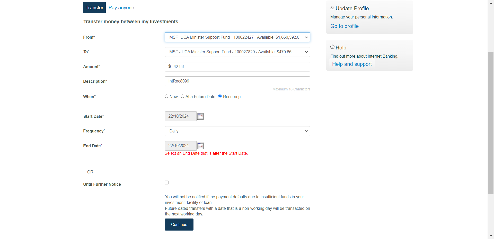Then confirm the internal trasfer IB recurringStep skippedAnd Review the internal transfer Recurring paymentStep skippedThen logout from IbStep skippedAnd Login to authorizer account with username "
And click on Go to AccountsAnd click on Transfers and Pay buttonThen click on transfer buttonThen Enter the Internal Recurring transaction details in IBAnd click on continue buttoncom.frameium.stepdef.Hooks.afterEveryStep(io.cucumber.java.Scenario)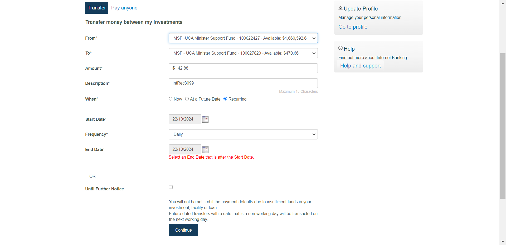Then confirm the internal trasfer IB recurringStep skippedAnd Review the internal transfer Recurring paymentStep skippedThen logout from IbStep skippedAnd Login to authorizer account with username ""and password " " Step skippedAnd click on Go to AccountsStep skippedAnd click on Transfers and Pay buttonStep skippedThen click on Authorization buttonStep skippedAnd Authorize the internal transfer RecurringStep skippedThen Review authorization that the details of internal transfer Recurring is reflected correctlyStep skippedPassPerform External Transfer IB saved nowPassPerform External Transfer IB saved nowWhen close all the other opened windows before loading the urlWhen User opens the IB URL Given I login with username "298010" and password "Temenos@123" of IBAnd click on Go to AccountsAnd click on Transfers and Pay buttonThen click on transfer buttonAnd Enter the details for external transfer nowThen Confirm the external transfer IB nowAnd Review the external transfer now paymentThen logout from IbAnd Login to authorizer account with username "
Given I login with username "298010" and password "Temenos@123" of IBAnd click on Go to AccountsAnd click on Transfers and Pay buttonThen click on transfer buttonAnd Enter the details for external transfer nowThen Confirm the external transfer IB nowAnd Review the external transfer now paymentThen logout from IbAnd Login to authorizer account with username ""and password " " And click on Go to AccountsAnd click on Transfers and Pay buttonThen click on Authorization buttonAnd Authorize the External transfer nowThen Review authorization that the details of external transfer is reflected correctly PassExternal Transfer saved IB RecurringPassExternal Transfer saved IB RecurringWhen close all the other opened windows before loading the urlWhen User opens the IB URL
PassExternal Transfer saved IB RecurringPassExternal Transfer saved IB RecurringWhen close all the other opened windows before loading the urlWhen User opens the IB URL Given I login with username "298010" and password "Temenos@123" of IB
Given I login with username "298010" and password "Temenos@123" of IB And click on Go to AccountsAnd click on Transfers and Pay buttonThen click on transfer buttonAnd Enter the details for external transfer saved recurringThen Confirm the external transfer IBAnd Review the external transfer recurring paymentThen logout from IbAnd Login to authorizer account with username "
And click on Go to AccountsAnd click on Transfers and Pay buttonThen click on transfer buttonAnd Enter the details for external transfer saved recurringThen Confirm the external transfer IBAnd Review the external transfer recurring paymentThen logout from IbAnd Login to authorizer account with username ""and password " " And click on Go to AccountsAnd click on Transfers and Pay buttonThen click on Authorization buttonAnd Authorize the External transfer recurring savedThen Review authorization that the details of external transfer recurring is reflected correctly FailExternal Transfer saved IB futureFailExternal Transfer saved IB futureWhen close all the other opened windows before loading the urlWhen User opens the IB URL
FailExternal Transfer saved IB futureFailExternal Transfer saved IB futureWhen close all the other opened windows before loading the urlWhen User opens the IB URL Given I login with username "298010" and password "Temenos@123" of IB
Given I login with username "298010" and password "Temenos@123" of IB And click on Go to AccountsAnd click on Transfers and Pay buttonThen click on transfer buttonThen Enter the external future transaction details in IB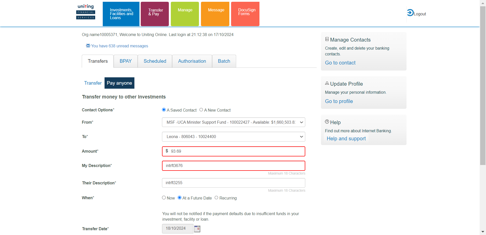And click on continue buttonThen confirm the External transfer future payment
And click on Go to AccountsAnd click on Transfers and Pay buttonThen click on transfer buttonThen Enter the external future transaction details in IB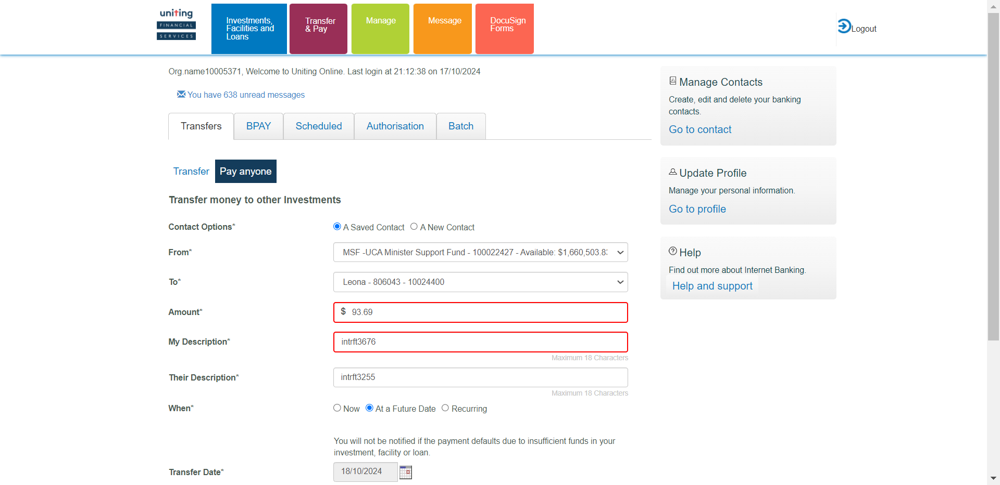And click on continue buttonThen confirm the External transfer future payment And Review the External transfer future payment
And Review the External transfer future payment Then logout from IbAnd Login to authorizer account with username "
Then logout from IbAnd Login to authorizer account with username ""and password " " And click on Go to AccountsAnd click on Transfers and Pay buttonThen click on Authorization buttonAnd Authorize the External transfer future Then Review authorization that the details of internal transfer future is reflected correctly
Then Review authorization that the details of internal transfer future is reflected correctly com.frameium.stepdef.Hooks.afterEveryStep(io.cucumber.java.Scenario)
com.frameium.stepdef.Hooks.afterEveryStep(io.cucumber.java.Scenario) FailExternal Transfer saved IB futureWhen close all the other opened windows before loading the urlWhen User opens the IB URL
FailExternal Transfer saved IB futureWhen close all the other opened windows before loading the urlWhen User opens the IB URL Given I login with username "298010" and password "Temenos@123" of IB
Given I login with username "298010" and password "Temenos@123" of IB And click on Go to AccountsAnd click on Transfers and Pay buttonThen click on transfer buttonThen Enter the external future transaction details in IB
And click on Go to AccountsAnd click on Transfers and Pay buttonThen click on transfer buttonThen Enter the external future transaction details in IB And click on continue buttonThen confirm the External transfer future payment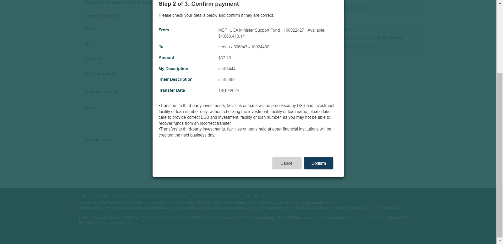And Review the External transfer future payment
And click on continue buttonThen confirm the External transfer future payment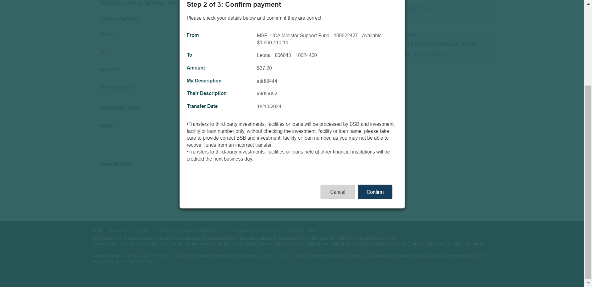And Review the External transfer future payment Then logout from IbAnd Login to authorizer account with username "
Then logout from IbAnd Login to authorizer account with username ""and password " " And click on Go to AccountsAnd click on Transfers and Pay buttonThen click on Authorization buttonAnd Authorize the External transfer future Then Review authorization that the details of internal transfer future is reflected correctlycom.frameium.stepdef.Hooks.afterEveryStep(io.cucumber.java.Scenario)
Then Review authorization that the details of internal transfer future is reflected correctlycom.frameium.stepdef.Hooks.afterEveryStep(io.cucumber.java.Scenario) PassPerform External Transfer IB new contact nowPassPerform External Transfer IB new contact nowWhen close all the other opened windows before loading the urlWhen User opens the IB URL
PassPerform External Transfer IB new contact nowPassPerform External Transfer IB new contact nowWhen close all the other opened windows before loading the urlWhen User opens the IB URL Given I login with username "298010" and password "Temenos@123" of IB
Given I login with username "298010" and password "Temenos@123" of IB And click on Go to AccountsAnd click on Transfers and Pay buttonThen click on transfer buttonAnd Enter the details for external transfer new contact nowThen Confirm the external transfer IB new ContactAnd Review the external transfer new contact now paymentThen logout from IbAnd Login to authorizer account with username "
And click on Go to AccountsAnd click on Transfers and Pay buttonThen click on transfer buttonAnd Enter the details for external transfer new contact nowThen Confirm the external transfer IB new ContactAnd Review the external transfer new contact now paymentThen logout from IbAnd Login to authorizer account with username ""and password " " And click on Go to AccountsAnd click on Transfers and Pay buttonThen click on Authorization buttonAnd Authorize the External transfer new contact nowThen Review authorization that Taccountthe details of external transfer new contact now is reflected correctly PassPerform External Transfer IB new contact RecurringPassPerform External Transfer IB new contact RecurringWhen close all the other opened windows before loading the urlWhen User opens the IB URL
PassPerform External Transfer IB new contact RecurringPassPerform External Transfer IB new contact RecurringWhen close all the other opened windows before loading the urlWhen User opens the IB URL Given I login with username "298010" and password "Temenos@123" of IB
Given I login with username "298010" and password "Temenos@123" of IB And click on Go to AccountsAnd click on Transfers and Pay buttonThen click on transfer buttonAnd Enter the details for external transfer new contact RecurringThen Confirm the external transfer IB new Contact RecurringAnd Review the external transfer new contact Recurring paymentThen logout from IbAnd Login to authorizer account with username "
And click on Go to AccountsAnd click on Transfers and Pay buttonThen click on transfer buttonAnd Enter the details for external transfer new contact RecurringThen Confirm the external transfer IB new Contact RecurringAnd Review the external transfer new contact Recurring paymentThen logout from IbAnd Login to authorizer account with username ""and password " " And click on Go to AccountsAnd click on Transfers and Pay buttonThen click on Authorization buttonAnd Authorize the External transfer new contact Recurring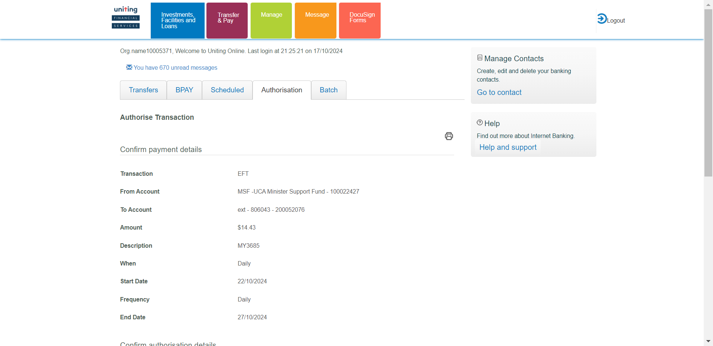Then Review authorization that the details of external transfer new contact recurring is reflected correctly PassPerform External Transfer IB new contact futurePassPerform External Transfer IB new contact futureWhen close all the other opened windows before loading the urlWhen User opens the IB URL
PassPerform External Transfer IB new contact futurePassPerform External Transfer IB new contact futureWhen close all the other opened windows before loading the urlWhen User opens the IB URL Given I login with username "298010" and password "Temenos@123" of IB
Given I login with username "298010" and password "Temenos@123" of IB And click on Go to AccountsAnd click on Transfers and Pay buttonThen click on transfer buttonAnd Enter the details for external transfer new contact futureThen Confirm the external transfer IB new Contact futureAnd Review the external transfer new contact future paymentThen logout from IbAnd Login to authorizer account with username "
And click on Go to AccountsAnd click on Transfers and Pay buttonThen click on transfer buttonAnd Enter the details for external transfer new contact futureThen Confirm the external transfer IB new Contact futureAnd Review the external transfer new contact future paymentThen logout from IbAnd Login to authorizer account with username ""and password " " And click on Go to AccountsAnd click on Transfers and Pay buttonThen click on Authorization buttonAnd Authorize the External transfer new contact future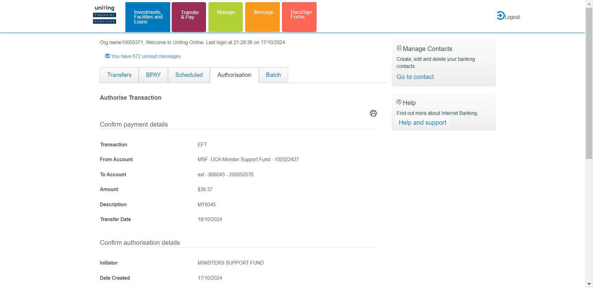Then Review authorization that the details of external transfer new contact future is reflected correctly FailBpay now saved contactFailBpay now saved contactWhen close all the other opened windows before loading the urlWhen User opens the IB URL
FailBpay now saved contactFailBpay now saved contactWhen close all the other opened windows before loading the urlWhen User opens the IB URL Given I login with username "298010" and password "Temenos@123" of IB
Given I login with username "298010" and password "Temenos@123" of IB And click on Go to AccountsAnd click on Transfers and Pay buttonThen click on transfer buttonThen Click on BpayThen Enter the Bpay detailsAnd confirm Bpay saved paymentAnd Review the BPAY saved contact nowThen logout from IbAnd Login to authorizer account with username "
And click on Go to AccountsAnd click on Transfers and Pay buttonThen click on transfer buttonThen Click on BpayThen Enter the Bpay detailsAnd confirm Bpay saved paymentAnd Review the BPAY saved contact nowThen logout from IbAnd Login to authorizer account with username ""and password " " And click on Go to AccountsAnd click on Transfers and Pay buttonThen click on Authorization buttonThen Authorize the Bpay transfer now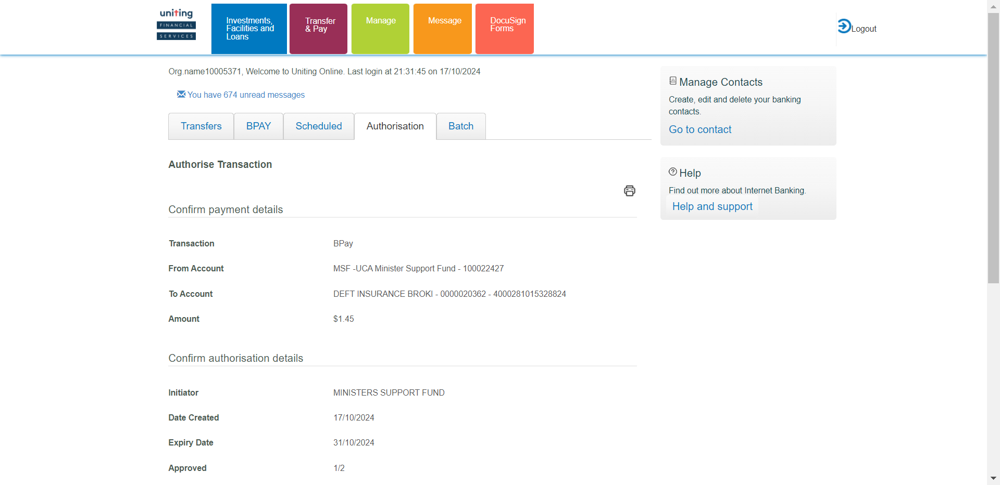com.frameium.stepdef.Hooks.afterEveryStep(io.cucumber.java.Scenario) Then Review authorization that the details of BPAY now is reflected correctlyStep skippedPassBpay now saved contactWhen close all the other opened windows before loading the urlWhen User opens the IB URL
Then Review authorization that the details of BPAY now is reflected correctlyStep skippedPassBpay now saved contactWhen close all the other opened windows before loading the urlWhen User opens the IB URL Given I login with username "298010" and password "Temenos@123" of IB
Given I login with username "298010" and password "Temenos@123" of IB And click on Go to AccountsAnd click on Transfers and Pay buttonThen click on transfer buttonThen Click on BpayThen Enter the Bpay detailsAnd confirm Bpay saved paymentAnd Review the BPAY saved contact nowThen logout from IbAnd Login to authorizer account with username "
And click on Go to AccountsAnd click on Transfers and Pay buttonThen click on transfer buttonThen Click on BpayThen Enter the Bpay detailsAnd confirm Bpay saved paymentAnd Review the BPAY saved contact nowThen logout from IbAnd Login to authorizer account with username ""and password " " And click on Go to AccountsAnd click on Transfers and Pay buttonThen click on Authorization buttonThen Authorize the Bpay transfer nowThen Review authorization that the details of BPAY now is reflected correctly FailBpay future saved contactFailBpay future saved contactWhen close all the other opened windows before loading the urlWhen User opens the IB URL
FailBpay future saved contactFailBpay future saved contactWhen close all the other opened windows before loading the urlWhen User opens the IB URL Given I login with username "298010" and password "Temenos@123" of IB
Given I login with username "298010" and password "Temenos@123" of IB And click on Go to AccountsAnd click on Transfers and Pay buttonThen click on transfer buttonThen Click on BpayThen Enter the Bpay future detailsAnd confirm Bpay saved payment futurecom.frameium.stepdef.Hooks.afterEveryStep(io.cucumber.java.Scenario)
And click on Go to AccountsAnd click on Transfers and Pay buttonThen click on transfer buttonThen Click on BpayThen Enter the Bpay future detailsAnd confirm Bpay saved payment futurecom.frameium.stepdef.Hooks.afterEveryStep(io.cucumber.java.Scenario) And Review the BPAY saved contact futureStep skippedThen logout from IbStep skippedAnd Login to authorizer account with username "
And Review the BPAY saved contact futureStep skippedThen logout from IbStep skippedAnd Login to authorizer account with username ""and password " " Step skippedAnd click on Go to AccountsStep skippedAnd click on Transfers and Pay buttonStep skippedThen click on Authorization buttonStep skippedThen Authorize the Bpay transfer futureStep skippedThen Review authorization that the details of BPAY future is reflected correctlyStep skippedFailBpay future saved contactWhen close all the other opened windows before loading the urlWhen User opens the IB URL Given I login with username "298010" and password "Temenos@123" of IB
Given I login with username "298010" and password "Temenos@123" of IB And click on Go to AccountsAnd click on Transfers and Pay buttonThen click on transfer buttonThen Click on BpayThen Enter the Bpay future detailsAnd confirm Bpay saved payment futurecom.frameium.stepdef.Hooks.afterEveryStep(io.cucumber.java.Scenario)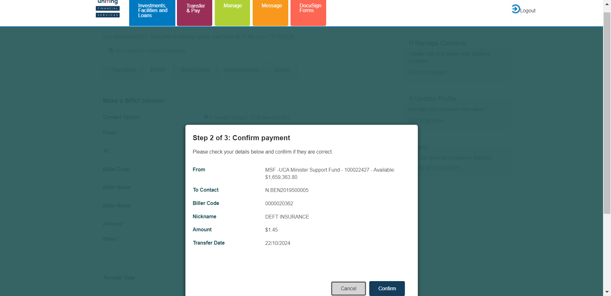And Review the BPAY saved contact futureStep skippedThen logout from IbStep skippedAnd Login to authorizer account with username "
And click on Go to AccountsAnd click on Transfers and Pay buttonThen click on transfer buttonThen Click on BpayThen Enter the Bpay future detailsAnd confirm Bpay saved payment futurecom.frameium.stepdef.Hooks.afterEveryStep(io.cucumber.java.Scenario)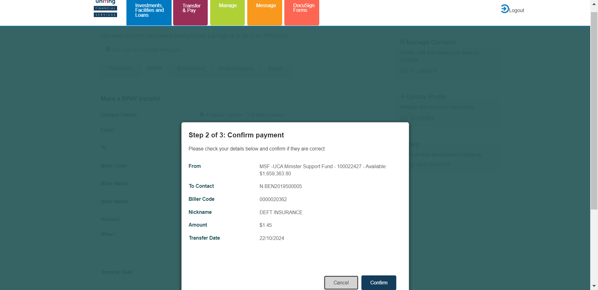And Review the BPAY saved contact futureStep skippedThen logout from IbStep skippedAnd Login to authorizer account with username ""and password " " Step skippedAnd click on Go to AccountsStep skippedAnd click on Transfers and Pay buttonStep skippedThen click on Authorization buttonStep skippedThen Authorize the Bpay transfer futureStep skippedThen Review authorization that the details of BPAY future is reflected correctlyStep skippedFailBpay recurrring saved contactFailBpay recurrring saved contactWhen close all the other opened windows before loading the urlWhen User opens the IB URL Given I login with username "298010" and password "Temenos@123" of IB
Given I login with username "298010" and password "Temenos@123" of IB And click on Go to AccountsAnd click on Transfers and Pay buttonThen click on transfer buttonThen Click on BpayThen Enter the Bpay recurring detailsAnd confirm Bpay saved payment recurringAnd Review the BPAY saved contact recurring
And click on Go to AccountsAnd click on Transfers and Pay buttonThen click on transfer buttonThen Click on BpayThen Enter the Bpay recurring detailsAnd confirm Bpay saved payment recurringAnd Review the BPAY saved contact recurring Then logout from IbAnd Login to authorizer account with username "
Then logout from IbAnd Login to authorizer account with username ""and password " " And click on Go to AccountsAnd click on Transfers and Pay buttonThen click on Authorization buttonThen Authorize the Bpay transfer recurring Then Review authorization that the details of BPAY saved contact recurring is reflected correctly
Then Review authorization that the details of BPAY saved contact recurring is reflected correctly com.frameium.stepdef.Hooks.afterEveryStep(io.cucumber.java.Scenario)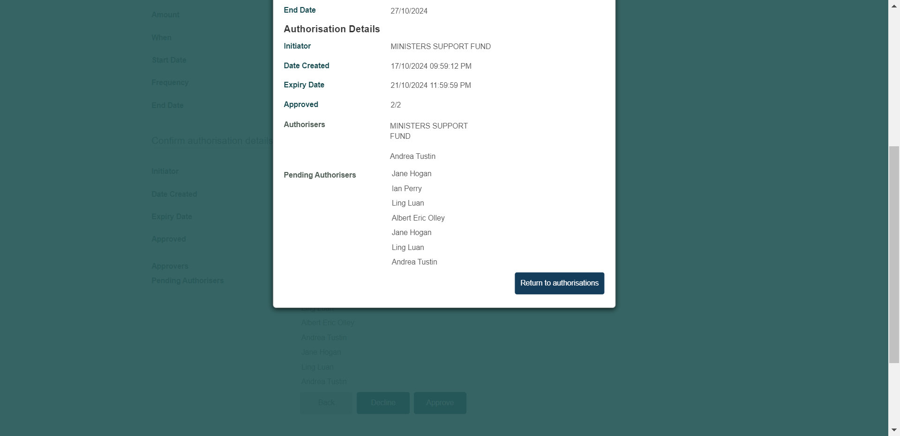FailBpay recurrring saved contactWhen close all the other opened windows before loading the urlWhen User opens the IB URL
com.frameium.stepdef.Hooks.afterEveryStep(io.cucumber.java.Scenario)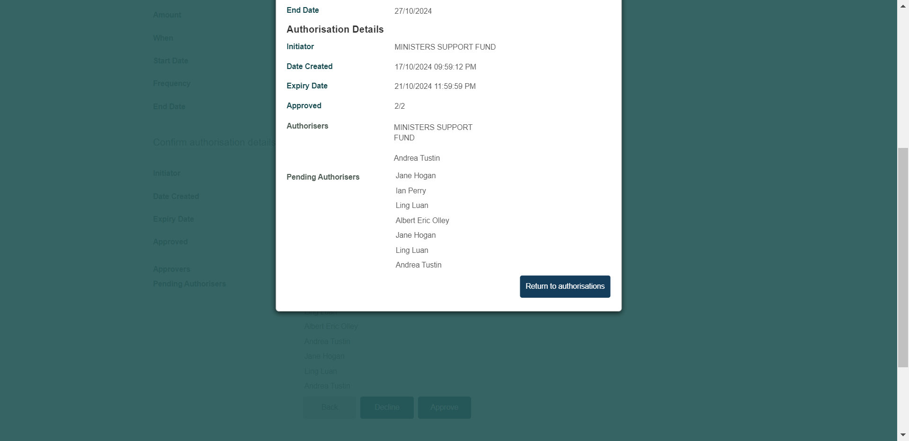FailBpay recurrring saved contactWhen close all the other opened windows before loading the urlWhen User opens the IB URL Given I login with username "298010" and password "Temenos@123" of IB
Given I login with username "298010" and password "Temenos@123" of IB And click on Go to AccountsAnd click on Transfers and Pay buttonThen click on transfer buttonThen Click on BpayThen Enter the Bpay recurring detailsAnd confirm Bpay saved payment recurringAnd Review the BPAY saved contact recurring
And click on Go to AccountsAnd click on Transfers and Pay buttonThen click on transfer buttonThen Click on BpayThen Enter the Bpay recurring detailsAnd confirm Bpay saved payment recurringAnd Review the BPAY saved contact recurring Then logout from IbAnd Login to authorizer account with username "
Then logout from IbAnd Login to authorizer account with username ""and password " " And click on Go to AccountsAnd click on Transfers and Pay buttonThen click on Authorization buttonThen Authorize the Bpay transfer recurringcom.frameium.stepdef.Ufs.IBPayments.afterStep(io.cucumber.java.Scenario)com.frameium.stepdef.Hooks.afterEveryStep(io.cucumber.java.Scenario)Then Review authorization that the details of BPAY saved contact recurring is reflected correctlyStep skippedFailBpay now new contactFailBpay now new contactWhen close all the other opened windows before loading the urlWhen User opens the IB URL Given I login with username "298010" and password "Temenos@123" of IB
Given I login with username "298010" and password "Temenos@123" of IB And click on Go to AccountsAnd click on Transfers and Pay buttonThen click on transfer buttonThen Click on BpayThen Enter the Bpay new contact detailsAnd confirm Bpay new contact paymentAnd Review the BPAY new contact now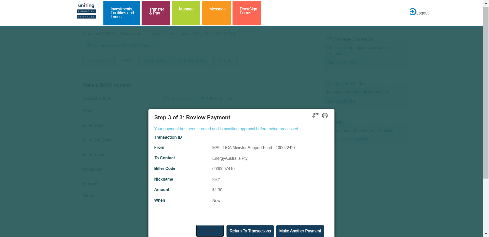Then logout from IbAnd Login to authorizer account with username "
And click on Go to AccountsAnd click on Transfers and Pay buttonThen click on transfer buttonThen Click on BpayThen Enter the Bpay new contact detailsAnd confirm Bpay new contact paymentAnd Review the BPAY new contact now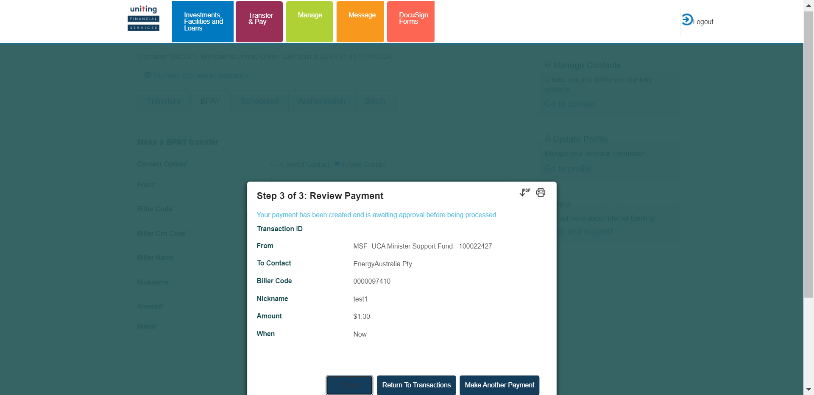Then logout from IbAnd Login to authorizer account with username ""and password " " And click on Go to AccountsAnd click on Transfers and Pay buttonThen click on Authorization buttonThen Authorize the Bpay transfer new contact now Then Review authorization that the details of BPAY now is reflected correctly
Then Review authorization that the details of BPAY now is reflected correctly com.frameium.stepdef.Hooks.afterEveryStep(io.cucumber.java.Scenario)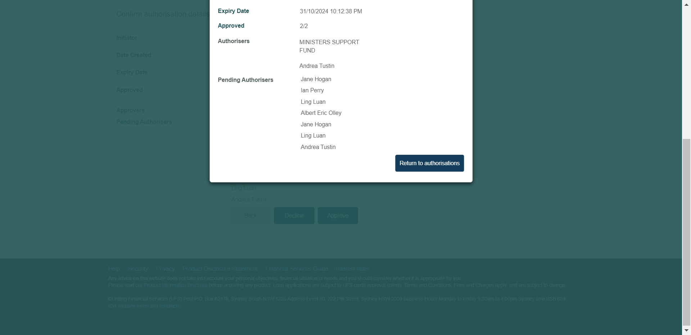FailBpay now new contactWhen close all the other opened windows before loading the urlWhen User opens the IB URL
com.frameium.stepdef.Hooks.afterEveryStep(io.cucumber.java.Scenario)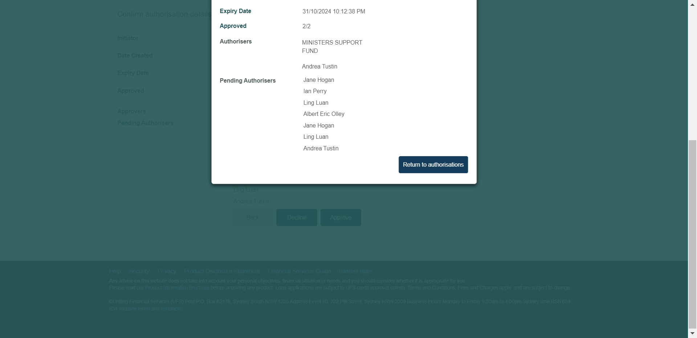FailBpay now new contactWhen close all the other opened windows before loading the urlWhen User opens the IB URL Given I login with username "298010" and password "Temenos@123" of IB
Given I login with username "298010" and password "Temenos@123" of IB And click on Go to AccountsAnd click on Transfers and Pay buttonThen click on transfer buttonThen Click on BpayThen Enter the Bpay new contact detailsAnd confirm Bpay new contact paymentAnd Review the BPAY new contact now
And click on Go to AccountsAnd click on Transfers and Pay buttonThen click on transfer buttonThen Click on BpayThen Enter the Bpay new contact detailsAnd confirm Bpay new contact paymentAnd Review the BPAY new contact now Then logout from IbAnd Login to authorizer account with username "
Then logout from IbAnd Login to authorizer account with username ""and password " " com.frameium.stepdef.Hooks.afterEveryStep(io.cucumber.java.Scenario)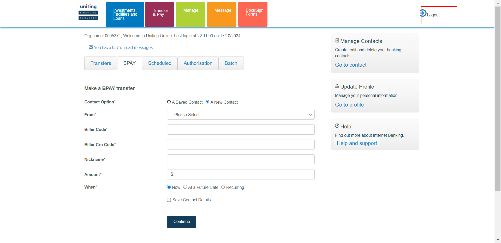And click on Go to AccountsStep skippedAnd click on Transfers and Pay buttonStep skippedThen click on Authorization buttonStep skippedThen Authorize the Bpay transfer new contact nowStep skippedThen Review authorization that the details of BPAY now is reflected correctlyStep skippedFailBpay recurring new contactFailBpay recurring new contactWhen close all the other opened windows before loading the urlWhen User opens the IB URL Given I login with username "298010" and password "Temenos@123" of IB
Given I login with username "298010" and password "Temenos@123" of IB And click on Go to AccountsAnd click on Transfers and Pay buttonThen click on transfer buttonThen Click on BpayThen Enter the Bpay new contact recurring detailscom.frameium.stepdef.Hooks.afterEveryStep(io.cucumber.java.Scenario)
And click on Go to AccountsAnd click on Transfers and Pay buttonThen click on transfer buttonThen Click on BpayThen Enter the Bpay new contact recurring detailscom.frameium.stepdef.Hooks.afterEveryStep(io.cucumber.java.Scenario) And confirm Bpay new contact recurring paymentStep skippedAnd Review the BPAY new contact recurringStep skippedThen logout from IbStep skippedAnd Login to authorizer account with username "
And confirm Bpay new contact recurring paymentStep skippedAnd Review the BPAY new contact recurringStep skippedThen logout from IbStep skippedAnd Login to authorizer account with username ""and password " " Step skippedAnd click on Go to AccountsStep skippedAnd click on Transfers and Pay buttonStep skippedThen click on Authorization buttonStep skippedThen Authorize the Bpay transfer new contact recurringStep skippedThen Review authorization that the details of BPAY recurring is reflected correctlyStep skippedFailBpay recurring new contactWhen close all the other opened windows before loading the urlWhen User opens the IB URL Given I login with username "298010" and password "Temenos@123" of IB
Given I login with username "298010" and password "Temenos@123" of IB And click on Go to AccountsAnd click on Transfers and Pay buttonThen click on transfer buttonThen Click on BpayThen Enter the Bpay new contact recurring detailscom.frameium.stepdef.Hooks.afterEveryStep(io.cucumber.java.Scenario)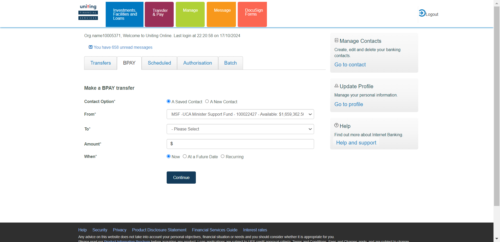And confirm Bpay new contact recurring paymentStep skippedAnd Review the BPAY new contact recurringStep skippedThen logout from IbStep skippedAnd Login to authorizer account with username "
And click on Go to AccountsAnd click on Transfers and Pay buttonThen click on transfer buttonThen Click on BpayThen Enter the Bpay new contact recurring detailscom.frameium.stepdef.Hooks.afterEveryStep(io.cucumber.java.Scenario)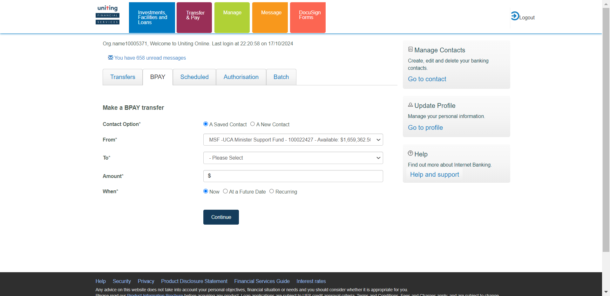And confirm Bpay new contact recurring paymentStep skippedAnd Review the BPAY new contact recurringStep skippedThen logout from IbStep skippedAnd Login to authorizer account with username ""and password " " Step skippedAnd click on Go to AccountsStep skippedAnd click on Transfers and Pay buttonStep skippedThen click on Authorization buttonStep skippedThen Authorize the Bpay transfer new contact recurringStep skippedThen Review authorization that the details of BPAY recurring is reflected correctlyStep skippedFailBpay future new contactFailBpay future new contactWhen close all the other opened windows before loading the urlWhen User opens the IB URLcom.frameium.stepdef.Hooks.afterEveryStep(io.cucumber.java.Scenario) Given I login with username "298010" and password "Temenos@123" of IBStep skippedAnd click on Go to AccountsStep skippedAnd click on Transfers and Pay buttonStep skippedThen click on transfer buttonStep skippedThen Click on BpayStep skippedThen Enter the Bpay new contact future detailsStep skippedAnd confirm Bpay new contact future paymentStep skippedAnd Review the BPAY new contact futureStep skippedThen logout from IbStep skippedAnd Login to authorizer account with username "
Given I login with username "298010" and password "Temenos@123" of IBStep skippedAnd click on Go to AccountsStep skippedAnd click on Transfers and Pay buttonStep skippedThen click on transfer buttonStep skippedThen Click on BpayStep skippedThen Enter the Bpay new contact future detailsStep skippedAnd confirm Bpay new contact future paymentStep skippedAnd Review the BPAY new contact futureStep skippedThen logout from IbStep skippedAnd Login to authorizer account with username ""and password " " Step skippedAnd click on Go to AccountsStep skippedAnd click on Transfers and Pay buttonStep skippedThen click on Authorization buttonStep skippedThen Authorize the Bpay transfer new contact futureStep skippedThen Review authorization that the details of BPAY future is reflected correctlyStep skippedPassBpay future new contactWhen close all the other opened windows before loading the urlWhen User opens the IB URL Given I login with username "298010" and password "Temenos@123" of IB
Given I login with username "298010" and password "Temenos@123" of IB And click on Go to AccountsAnd click on Transfers and Pay buttonThen click on transfer buttonThen Click on BpayThen Enter the Bpay new contact future detailsAnd confirm Bpay new contact future paymentAnd Review the BPAY new contact future
And click on Go to AccountsAnd click on Transfers and Pay buttonThen click on transfer buttonThen Click on BpayThen Enter the Bpay new contact future detailsAnd confirm Bpay new contact future paymentAnd Review the BPAY new contact future Then logout from IbAnd Login to authorizer account with username "
Then logout from IbAnd Login to authorizer account with username ""and password " " And click on Go to AccountsAnd click on Transfers and Pay buttonThen click on Authorization buttonThen Authorize the Bpay transfer new contact future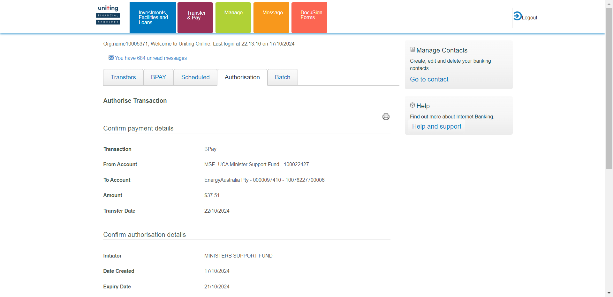Then Review authorization that the details of BPAY future is reflected correctly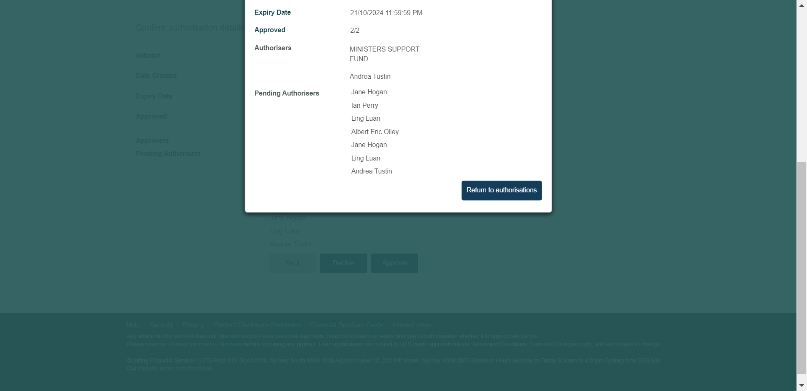PassSecure and Urgent messagePassSecure and Urgent messageWhen close all the other opened windows before loading the urlWhen User opens the IBM URL When Login to IBMWhen we send the Normal messageWhen We send the urgent messageWhen User opens the IB URL
When Login to IBMWhen we send the Normal messageWhen We send the urgent messageWhen User opens the IB URL Given I login with username "298010" and password "Temenos@123" of IB
Given I login with username "298010" and password "Temenos@123" of IB Then verify whether the urgent message is displayed in the landing pageAnd click on Go to AccountsThen check whether the urgent message is displayed on the inboxThen check whether the normal message is displayed on the inboxPasspassword changePasspassword changeWhen close all the other opened windows before loading the urlWhen User opens the IB URL
Then verify whether the urgent message is displayed in the landing pageAnd click on Go to AccountsThen check whether the urgent message is displayed on the inboxThen check whether the normal message is displayed on the inboxPasspassword changePasspassword changeWhen close all the other opened windows before loading the urlWhen User opens the IB URL When Login to IB for changing passwordAnd click on Go to AccountsWhen click on pasword changeWhen change the passwordPassChecking123 inbox message countPassChecking123 inbox message countWhen close all the other opened windows before loading the urlWhen User opens the IB URL
When Login to IB for changing passwordAnd click on Go to AccountsWhen click on pasword changeWhen change the passwordPassChecking123 inbox message countPassChecking123 inbox message countWhen close all the other opened windows before loading the urlWhen User opens the IB URL Given I login with username "298010" and password "Temenos@123" of IB
Given I login with username "298010" and password "Temenos@123" of IB And click on Go to AccountsWhen Click on inboxWhen read the messageThen check whether the message count decreasedFailAdding new contacts-transferFailAdding new contacts-transferWhen close all the other opened windows before loading the urlWhen User opens the IB URL
And click on Go to AccountsWhen Click on inboxWhen read the messageThen check whether the message count decreasedFailAdding new contacts-transferFailAdding new contacts-transferWhen close all the other opened windows before loading the urlWhen User opens the IB URL Given I login with username "298010" and password "Temenos@123" of IB
Given I login with username "298010" and password "Temenos@123" of IB And click on Go to AccountsWhen Click on add contactWhen add the new contact detailsThen confirm whether the details are correctWhen edit the newly added contact detailscom.frameium.stepdef.Hooks.afterEveryStep(io.cucumber.java.Scenario)
And click on Go to AccountsWhen Click on add contactWhen add the new contact detailsThen confirm whether the details are correctWhen edit the newly added contact detailscom.frameium.stepdef.Hooks.afterEveryStep(io.cucumber.java.Scenario) When delete the newly added contactStep skippedFailAdding new contacts-transferWhen close all the other opened windows before loading the urlWhen User opens the IB URL
When delete the newly added contactStep skippedFailAdding new contacts-transferWhen close all the other opened windows before loading the urlWhen User opens the IB URL Given I login with username "298010" and password "Temenos@123" of IB
Given I login with username "298010" and password "Temenos@123" of IB And click on Go to AccountsWhen Click on add contactWhen add the new contact detailsThen confirm whether the details are correctWhen edit the newly added contact detailscom.frameium.stepdef.Hooks.afterEveryStep(io.cucumber.java.Scenario)
And click on Go to AccountsWhen Click on add contactWhen add the new contact detailsThen confirm whether the details are correctWhen edit the newly added contact detailscom.frameium.stepdef.Hooks.afterEveryStep(io.cucumber.java.Scenario) When delete the newly added contactStep skippedFailAdding Editing and Deleting new contacts-BPAYFailAdding Editing and Deleting new contacts-BPAYWhen close all the other opened windows before loading the urlWhen User opens the IB URL
When delete the newly added contactStep skippedFailAdding Editing and Deleting new contacts-BPAYFailAdding Editing and Deleting new contacts-BPAYWhen close all the other opened windows before loading the urlWhen User opens the IB URL Given I login with username "298010" and password "Temenos@123" of IB
Given I login with username "298010" and password "Temenos@123" of IB And click on Go to AccountsWhen Click on add contactWhen add the new contact details of Bpaycom.frameium.stepdef.Hooks.afterEveryStep(io.cucumber.java.Scenario)
And click on Go to AccountsWhen Click on add contactWhen add the new contact details of Bpaycom.frameium.stepdef.Hooks.afterEveryStep(io.cucumber.java.Scenario) Then confirm whether the newly added BPAY details are correctStep skippedWhen edit the newly added BPAY contact detailsStep skippedWhen delete the newly added BPAY contactStep skippedFailAdding Editing and Deleting new contacts-BPAYWhen close all the other opened windows before loading the urlWhen User opens the IB URL
Then confirm whether the newly added BPAY details are correctStep skippedWhen edit the newly added BPAY contact detailsStep skippedWhen delete the newly added BPAY contactStep skippedFailAdding Editing and Deleting new contacts-BPAYWhen close all the other opened windows before loading the urlWhen User opens the IB URL Given I login with username "298010" and password "Temenos@123" of IB
Given I login with username "298010" and password "Temenos@123" of IB And click on Go to AccountsWhen Click on add contactWhen add the new contact details of Bpaycom.frameium.stepdef.Hooks.afterEveryStep(io.cucumber.java.Scenario)
And click on Go to AccountsWhen Click on add contactWhen add the new contact details of Bpaycom.frameium.stepdef.Hooks.afterEveryStep(io.cucumber.java.Scenario) Then confirm whether the newly added BPAY details are correctStep skippedWhen edit the newly added BPAY contact detailsStep skippedWhen delete the newly added BPAY contactStep skippedFailSession history IBPassSession history IBWhen close all the other opened windows before loading the urlWhen User opens the IB URL
Then confirm whether the newly added BPAY details are correctStep skippedWhen edit the newly added BPAY contact detailsStep skippedWhen delete the newly added BPAY contactStep skippedFailSession history IBPassSession history IBWhen close all the other opened windows before loading the urlWhen User opens the IB URL Given I login with username "298010" and password "Temenos@123" of IB
Given I login with username "298010" and password "Temenos@123" of IB And click on Go to AccountsThen check whether the session history is showing the correct detailsFailSession history IBWhen close all the other opened windows before loading the urlcom.frameium.stepdef.Ufs.IBPayments.afterStep(io.cucumber.java.Scenario)com.frameium.stepdef.Hooks.afterEveryStep(io.cucumber.java.Scenario)When User opens the IB URLStep skippedGiven I login with username "298010" and password "Temenos@123" of IBStep skippedAnd click on Go to AccountsStep skippedThen check the sessionHistory of the accountStep skippedFailSession history IBWhen close all the other opened windows before loading the urlcom.frameium.stepdef.Ufs.IBPayments.afterStep(io.cucumber.java.Scenario)com.frameium.stepdef.Hooks.afterEveryStep(io.cucumber.java.Scenario)When User opens the IB URLStep skippedGiven I login with username "298010" and password "Temenos@123" of IBStep skippedAnd click on Go to AccountsStep skippedThen check the sessionHistory of the accountStep skippedFailBatch template-Create/edit/deleteFailBatch template-Create/edit/deleteWhen close all the other opened windows before loading the urlWhen User opens the IB URL
And click on Go to AccountsThen check whether the session history is showing the correct detailsFailSession history IBWhen close all the other opened windows before loading the urlcom.frameium.stepdef.Ufs.IBPayments.afterStep(io.cucumber.java.Scenario)com.frameium.stepdef.Hooks.afterEveryStep(io.cucumber.java.Scenario)When User opens the IB URLStep skippedGiven I login with username "298010" and password "Temenos@123" of IBStep skippedAnd click on Go to AccountsStep skippedThen check the sessionHistory of the accountStep skippedFailSession history IBWhen close all the other opened windows before loading the urlcom.frameium.stepdef.Ufs.IBPayments.afterStep(io.cucumber.java.Scenario)com.frameium.stepdef.Hooks.afterEveryStep(io.cucumber.java.Scenario)When User opens the IB URLStep skippedGiven I login with username "298010" and password "Temenos@123" of IBStep skippedAnd click on Go to AccountsStep skippedThen check the sessionHistory of the accountStep skippedFailBatch template-Create/edit/deleteFailBatch template-Create/edit/deleteWhen close all the other opened windows before loading the urlWhen User opens the IB URL Given I login with username "298010" and password "Temenos@123" of IB
Given I login with username "298010" and password "Temenos@123" of IB And click on Go to AccountsAnd click on Transfers and Pay buttonThen create new batch templatecom.frameium.stepdef.Hooks.afterEveryStep(io.cucumber.java.Scenario)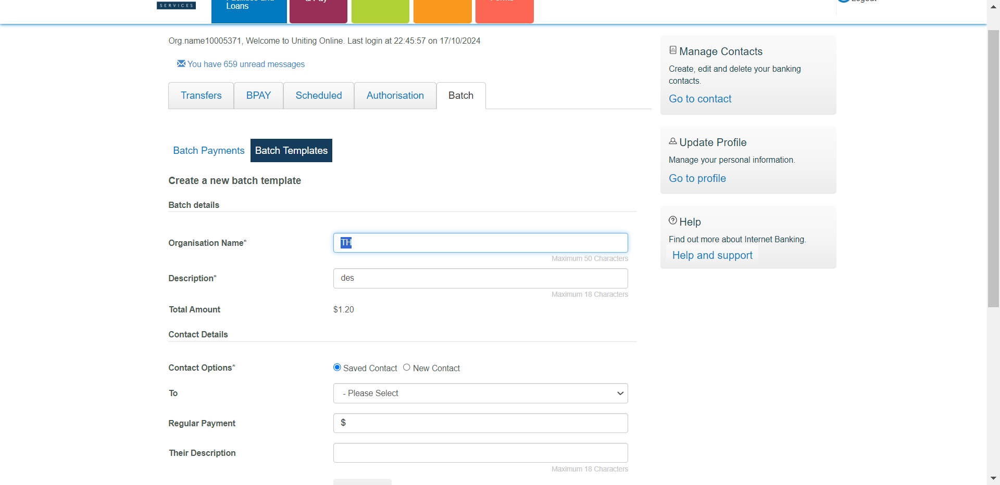Then Delete the newly created batch templateStep skippedFailBatch template-Create/edit/deleteWhen close all the other opened windows before loading the urlWhen User opens the IB URL
And click on Go to AccountsAnd click on Transfers and Pay buttonThen create new batch templatecom.frameium.stepdef.Hooks.afterEveryStep(io.cucumber.java.Scenario)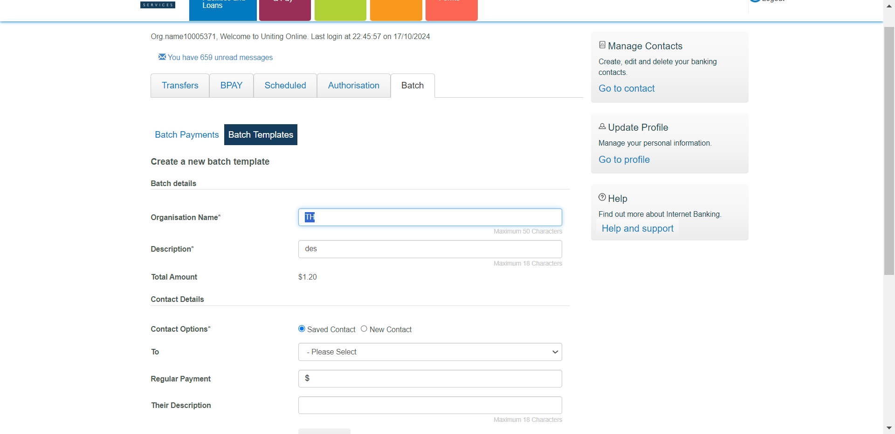Then Delete the newly created batch templateStep skippedFailBatch template-Create/edit/deleteWhen close all the other opened windows before loading the urlWhen User opens the IB URL Given I login with username "298010" and password "Temenos@123" of IB
Given I login with username "298010" and password "Temenos@123" of IB And click on Go to AccountsAnd click on Transfers and Pay buttonThen create new batch templatecom.frameium.stepdef.Hooks.afterEveryStep(io.cucumber.java.Scenario)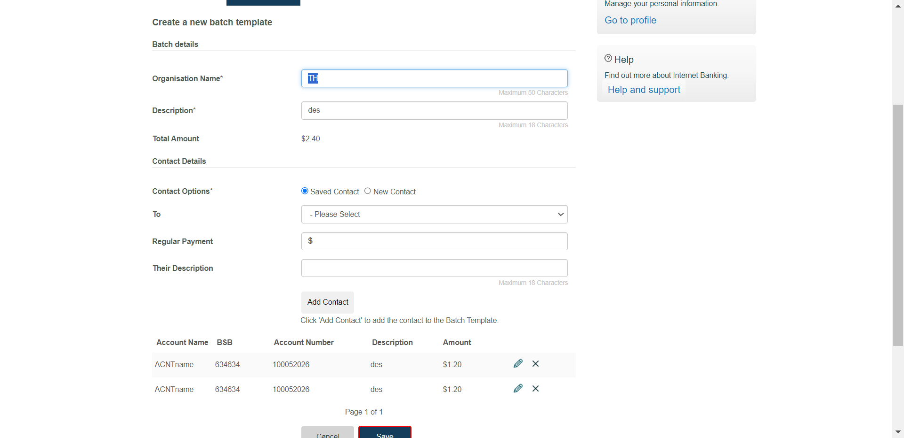Then Delete the newly created batch templateStep skippedPassCompose messagePassCompose messageWhen close all the other opened windows before loading the urlWhen User opens the IB URL
And click on Go to AccountsAnd click on Transfers and Pay buttonThen create new batch templatecom.frameium.stepdef.Hooks.afterEveryStep(io.cucumber.java.Scenario)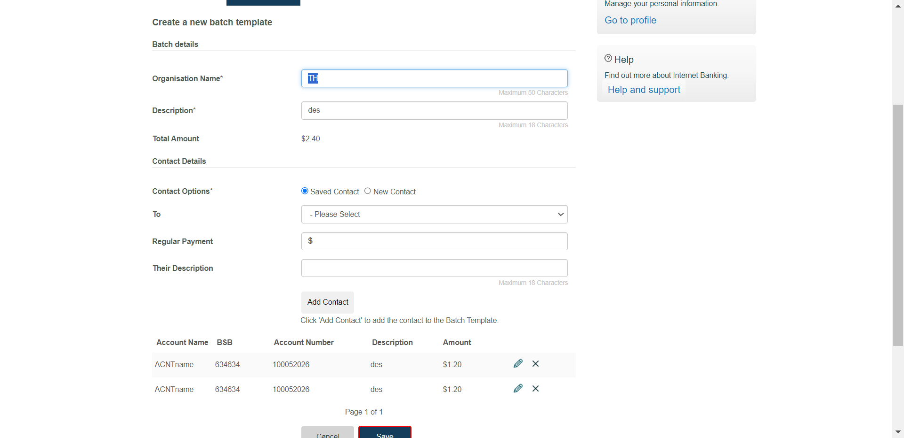Then Delete the newly created batch templateStep skippedPassCompose messagePassCompose messageWhen close all the other opened windows before loading the urlWhen User opens the IB URL Given I login with username "298010" and password "Temenos@123" of IB
Given I login with username "298010" and password "Temenos@123" of IB And click on Go to AccountsThen compose messageFaildebit batch payment fileFaildebit batch payment fileWhen close all the other opened windows before loading the urlWhen User opens the IB URL
And click on Go to AccountsThen compose messageFaildebit batch payment fileFaildebit batch payment fileWhen close all the other opened windows before loading the urlWhen User opens the IB URL Given I login with username "298010" and password "Temenos@123" of IB
Given I login with username "298010" and password "Temenos@123" of IB And click on Go to AccountsAnd click on Transfers and Pay buttonThen Click on BatchAnd Enter the details of batchpayment filecom.frameium.stepdef.Hooks.afterEveryStep(io.cucumber.java.Scenario)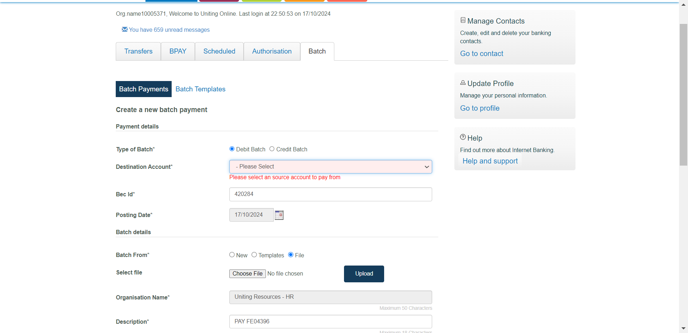Then Review the batch payment fileStep skippedThen logout from IbStep skippedAnd Login to authorizer account with username "
And click on Go to AccountsAnd click on Transfers and Pay buttonThen Click on BatchAnd Enter the details of batchpayment filecom.frameium.stepdef.Hooks.afterEveryStep(io.cucumber.java.Scenario)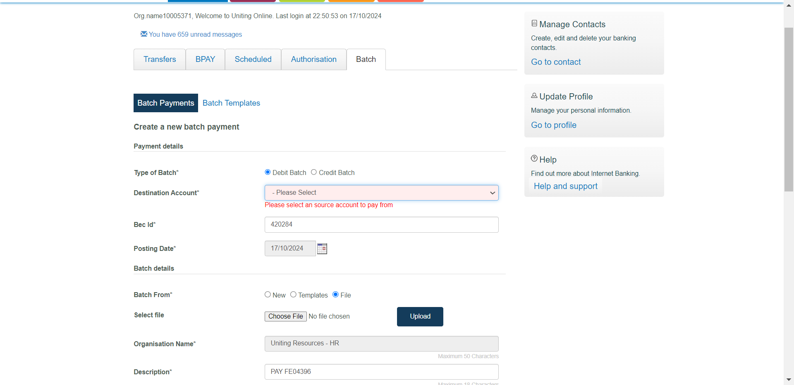Then Review the batch payment fileStep skippedThen logout from IbStep skippedAnd Login to authorizer account with username ""and password " " Step skippedAnd click on Go to AccountsStep skippedAnd click on Transfers and Pay buttonStep skippedThen click on Authorization buttonStep skippedAnd open the batch payment using file that need to be authorisedStep skippedThen authorise the batch paymentStep skippedThen review authorization that the details of debitbatchpaymentsfileStep skippedWhen User opens the T24 UrlStep skippedThen User should be able to login to T24Step skippedThen The user should be able to fill the commandlineStep skippedAnd The user should be able to click on general enquiries buttomStep skippedAnd click on the IB-view of account entriesStep skippedThen Enter the account number of debitbatchpaymentsfileStep skippedAnd click on find buttonStep skippedThen verify the narratives of debitbatchpaymentsfileStep skippedFaildebit batch payment fileWhen close all the other opened windows before loading the urlWhen User opens the IB URL Given I login with username "298010" and password "Temenos@123" of IB
Given I login with username "298010" and password "Temenos@123" of IB And click on Go to Accountscom.frameium.stepdef.Ufs.IBPayments.afterStep(io.cucumber.java.Scenario)com.frameium.stepdef.Hooks.afterEveryStep(io.cucumber.java.Scenario)And click on Transfers and Pay buttonStep skippedThen Click on BatchStep skippedAnd Enter the details of batchpayment fileStep skippedThen Review the batch payment fileStep skippedThen logout from IbStep skippedAnd Login to authorizer account with username "
And click on Go to Accountscom.frameium.stepdef.Ufs.IBPayments.afterStep(io.cucumber.java.Scenario)com.frameium.stepdef.Hooks.afterEveryStep(io.cucumber.java.Scenario)And click on Transfers and Pay buttonStep skippedThen Click on BatchStep skippedAnd Enter the details of batchpayment fileStep skippedThen Review the batch payment fileStep skippedThen logout from IbStep skippedAnd Login to authorizer account with username ""and password " " Step skippedAnd click on Go to AccountsStep skippedAnd click on Transfers and Pay buttonStep skippedThen click on Authorization buttonStep skippedAnd open the batch payment using file that need to be authorisedStep skippedThen authorise the batch paymentStep skippedThen review authorization that the details of debitbatchpaymentsfileStep skippedWhen User opens the T24 UrlStep skippedThen User should be able to login to T24Step skippedThen The user should be able to fill the commandlineStep skippedAnd The user should be able to click on general enquiries buttomStep skippedAnd click on the IB-view of account entriesStep skippedThen Enter the account number of debitbatchpaymentsfileStep skippedAnd click on find buttonStep skippedThen verify the narratives of debitbatchpaymentsfileStep skippedFailcredit batch payment fileFailcredit batch payment fileWhen close all the other opened windows before loading the urlcom.frameium.stepdef.Ufs.IBPayments.afterStep(io.cucumber.java.Scenario)com.frameium.stepdef.Hooks.afterEveryStep(io.cucumber.java.Scenario)When User opens the IB URLStep skippedGiven I login with username "298010" and password "Temenos@123" of IBStep skippedAnd click on Go to AccountsStep skippedAnd click on Transfers and Pay buttonStep skippedThen Click on BatchStep skippedAnd Enter the details of Credit batchpayment fileStep skippedThen verify the details of credit batch and click on Pay now buttonStep skippedThen logout from IbStep skippedAnd Login to authorizer account with username ""and password " " Step skippedAnd click on Go to AccountsStep skippedAnd click on Transfers and Pay buttonStep skippedThen click on Authorization buttonStep skippedAnd open the batch payment that need to be authorisedStep skippedThen authorise the credit batch payment fileStep skippedThen review authorization that the details of creditbatchpaymentsfileStep skippedWhen User opens the T24 UrlStep skippedThen User should be able to login to T24Step skippedThen The user should be able to fill the commandlineStep skippedAnd The user should be able to click on general enquiries buttomStep skippedAnd click on the IB-view of account entriesStep skippedThen Enter the account number of creditbatchpaymentsfileStep skippedAnd click on find buttonStep skippedThen verify the narratives of creditbatchpaymentsfileStep skippedFailcredit batch payment fileWhen close all the other opened windows before loading the urlcom.frameium.stepdef.Ufs.IBPayments.afterStep(io.cucumber.java.Scenario)com.frameium.stepdef.Hooks.afterEveryStep(io.cucumber.java.Scenario)When User opens the IB URLStep skippedGiven I login with username "298010" and password "Temenos@123" of IBStep skippedAnd click on Go to AccountsStep skippedAnd click on Transfers and Pay buttonStep skippedThen Click on BatchStep skippedAnd Enter the details of Credit batchpayment fileStep skippedThen verify the details of credit batch and click on Pay now buttonStep skippedThen logout from IbStep skippedAnd Login to authorizer account with username ""and password " " Step skippedAnd click on Go to AccountsStep skippedAnd click on Transfers and Pay buttonStep skippedThen click on Authorization buttonStep skippedAnd open the batch payment that need to be authorisedStep skippedThen authorise the credit batch payment fileStep skippedThen review authorization that the details of creditbatchpaymentsfileStep skippedWhen User opens the T24 UrlStep skippedThen User should be able to login to T24Step skippedThen The user should be able to fill the commandlineStep skippedAnd The user should be able to click on general enquiries buttomStep skippedAnd click on the IB-view of account entriesStep skippedThen Enter the account number of creditbatchpaymentsfileStep skippedAnd click on find buttonStep skippedThen verify the narratives of creditbatchpaymentsfileStep skippedFailDebit batch paymentFailDebit batch paymentWhen close all the other opened windows before loading the urlcom.frameium.stepdef.Ufs.IBPayments.afterStep(io.cucumber.java.Scenario)com.frameium.stepdef.Hooks.afterEveryStep(io.cucumber.java.Scenario)When User opens the IB URLStep skippedGiven I login with username "298010" and password "Temenos@123" of IBStep skippedAnd click on Go to AccountsStep skippedAnd click on Transfers and Pay buttonStep skippedThen Click on BatchStep skippedAnd Enter the details of Debit batchpaymentStep skippedThen verify the details of debit batch payment and click on Pay now buttonStep skippedThen logout from IbStep skippedAnd Login to authorizer account with username ""and password " " Step skippedAnd click on Go to AccountsStep skippedAnd click on Transfers and Pay buttonStep skippedThen click on Authorization buttonStep skippedAnd open the debit batch payment that need to be authorisedStep skippedThen authorise the debit batch paymentStep skippedThen review authorization that the details of debit batch paymentStep skippedWhen User opens the T24 UrlStep skippedThen User should be able to login to T24Step skippedThen The user should be able to fill the commandlineStep skippedAnd The user should be able to click on general enquiries buttomStep skippedAnd click on the IB-view of account entriesStep skippedThen Enter the account number of debit batch paymentStep skippedAnd click on find buttonStep skippedAnd verify the narratives of debit batch paymenttStep skippedWhen User opens the IBM URLStep skippedWhen Login to IBMStep skippedThen check the audit log whether the debit batch payment initiated in subIb "298010" scheduled is reflected forStep skippedFailDebit batch paymentWhen close all the other opened windows before loading the urlcom.frameium.stepdef.Ufs.IBPayments.afterStep(io.cucumber.java.Scenario)com.frameium.stepdef.Hooks.afterEveryStep(io.cucumber.java.Scenario)When User opens the IB URLStep skippedGiven I login with username "298010" and password "Temenos@123" of IBStep skippedAnd click on Go to AccountsStep skippedAnd click on Transfers and Pay buttonStep skippedThen Click on BatchStep skippedAnd Enter the details of Debit batchpaymentStep skippedThen verify the details of debit batch payment and click on Pay now buttonStep skippedThen logout from IbStep skippedAnd Login to authorizer account with username ""and password " " Step skippedAnd click on Go to AccountsStep skippedAnd click on Transfers and Pay buttonStep skippedThen click on Authorization buttonStep skippedAnd open the debit batch payment that need to be authorisedStep skippedThen authorise the debit batch paymentStep skippedThen review authorization that the details of debit batch paymentStep skippedWhen User opens the T24 UrlStep skippedThen User should be able to login to T24Step skippedThen The user should be able to fill the commandlineStep skippedAnd The user should be able to click on general enquiries buttomStep skippedAnd click on the IB-view of account entriesStep skippedThen Enter the account number of debit batch paymentStep skippedAnd click on find buttonStep skippedAnd verify the narratives of debit batch paymenttStep skippedWhen User opens the IBM URLStep skippedWhen Login to IBMStep skippedThen check the audit log whether the debit batch payment initiated in subIb "298010" scheduled is reflected forStep skippedFailCredit batch payment origiFailCredit batch payment origiWhen close all the other opened windows before loading the urlcom.frameium.stepdef.Ufs.IBPayments.afterStep(io.cucumber.java.Scenario)com.frameium.stepdef.Hooks.afterEveryStep(io.cucumber.java.Scenario)When User opens the IB URLStep skippedGiven I login with username "298010" and password "Temenos@123" of IBStep skippedAnd click on Go to AccountsStep skippedAnd click on Transfers and Pay buttonStep skippedThen Click on BatchStep skippedAnd Enter the details of Credit batchpaymentStep skippedThen verify the details and click on Pay now buttonStep skippedThen logout from IbStep skippedAnd Login to authorizer account with username ""and password " " Step skippedAnd click on Go to AccountsStep skippedAnd click on Transfers and Pay buttonStep skippedThen click on Authorization buttonStep skippedAnd open the credit batch payment that need to be authorisedStep skippedThen authorise the credit batch paymentStep skippedThen review authorization that the details of creditbatchpaymentStep skippedThen logout from IbStep skippedWhen User opens the T24 UrlStep skippedThen User should be able to login to T24Step skippedThen The user should be able to fill the commandlineStep skippedAnd The user should be able to click on general enquiries buttomStep skippedAnd click on the IB-view of account entriesStep skippedThen Enter the account number of creditbatchpaymentStep skippedAnd click on find buttonStep skippedThen verify the narratives of creditbatchpaymenttStep skippedFailCredit batch payment origiWhen close all the other opened windows before loading the urlcom.frameium.stepdef.Ufs.IBPayments.afterStep(io.cucumber.java.Scenario)com.frameium.stepdef.Hooks.afterEveryStep(io.cucumber.java.Scenario)When User opens the IB URLStep skippedGiven I login with username "298010" and password "Temenos@123" of IBStep skippedAnd click on Go to AccountsStep skippedAnd click on Transfers and Pay buttonStep skippedThen Click on BatchStep skippedAnd Enter the details of Credit batchpaymentStep skippedThen verify the details and click on Pay now buttonStep skippedThen logout from IbStep skippedAnd Login to authorizer account with username ""and password " " Step skippedAnd click on Go to AccountsStep skippedAnd click on Transfers and Pay buttonStep skippedThen click on Authorization buttonStep skippedAnd open the credit batch payment that need to be authorisedStep skippedThen authorise the credit batch paymentStep skippedThen review authorization that the details of creditbatchpaymentStep skippedThen logout from IbStep skippedWhen User opens the T24 UrlStep skippedThen User should be able to login to T24Step skippedThen The user should be able to fill the commandlineStep skippedAnd The user should be able to click on general enquiries buttomStep skippedAnd click on the IB-view of account entriesStep skippedThen Enter the account number of creditbatchpaymentStep skippedAnd click on find buttonStep skippedThen verify the narratives of creditbatchpaymenttStep skippedFailDebit batch payment TemplateFailDebit batch payment TemplateWhen close all the other opened windows before loading the urlcom.frameium.stepdef.Ufs.IBPayments.afterStep(io.cucumber.java.Scenario)com.frameium.stepdef.Hooks.afterEveryStep(io.cucumber.java.Scenario)When User opens the IB URLStep skippedGiven I login with username "298010" and password "Temenos@123" of IBStep skippedAnd click on Go to AccountsStep skippedAnd click on Transfers and Pay buttonStep skippedThen Click on BatchStep skippedAnd Enter the details of Debit batchpayment templateStep skippedThen verify the details and click on Pay now buttonStep skippedThen logout from IbStep skippedAnd Login to authorizer account with username ""and password " " Step skippedAnd click on Go to AccountsStep skippedAnd click on Transfers and Pay buttonStep skippedThen click on Authorization buttonStep skippedAnd open the debit batch payment template that need to be authorisedStep skippedThen authorise the debit batch template paymentStep skippedThen review authorization details of debitbatchpayment templateStep skippedThen logout from IbStep skippedWhen User opens the T24 UrlStep skippedThen User should be able to login to T24Step skippedThen The user should be able to fill the commandlineStep skippedAnd The user should be able to click on general enquiries buttomStep skippedAnd click on the IB-view of account entriesStep skippedThen Enter the account number of debit batch payment templateStep skippedAnd click on find buttonStep skippedThen verify the narratives of debit batch payment templateStep skippedFailDebit batch payment TemplateWhen close all the other opened windows before loading the urlcom.frameium.stepdef.Ufs.IBPayments.afterStep(io.cucumber.java.Scenario)com.frameium.stepdef.Hooks.afterEveryStep(io.cucumber.java.Scenario)When User opens the IB URLStep skippedGiven I login with username "298010" and password "Temenos@123" of IBStep skippedAnd click on Go to AccountsStep skippedAnd click on Transfers and Pay buttonStep skippedThen Click on BatchStep skippedAnd Enter the details of Debit batchpayment templateStep skippedThen verify the details and click on Pay now buttonStep skippedThen logout from IbStep skippedAnd Login to authorizer account with username ""and password " " Step skippedAnd click on Go to AccountsStep skippedAnd click on Transfers and Pay buttonStep skippedThen click on Authorization buttonStep skippedAnd open the debit batch payment template that need to be authorisedStep skippedThen authorise the debit batch template paymentStep skippedThen review authorization details of debitbatchpayment templateStep skippedThen logout from IbStep skippedWhen User opens the T24 UrlStep skippedThen User should be able to login to T24Step skippedThen The user should be able to fill the commandlineStep skippedAnd The user should be able to click on general enquiries buttomStep skippedAnd click on the IB-view of account entriesStep skippedThen Enter the account number of debit batch payment templateStep skippedAnd click on find buttonStep skippedThen verify the narratives of debit batch payment templateStep skippedFailSingle sign onFailSingle sign onWhen close all the other opened windows before loading the urlcom.frameium.stepdef.Ufs.IBPayments.afterStep(io.cucumber.java.Scenario)com.frameium.stepdef.Hooks.afterEveryStep(io.cucumber.java.Scenario)When User opens the IBM URLStep skippedWhen Login to IBMStep skippedThen retrieve the clientStep skippedAnd get client numbers having single signonStep skippedWhen User opens the T24 UrlStep skippedThen User should be able to login to T24Step skippedThen The user should be able to fill the commandlineStep skippedThen check the total investment facilities in the customer overview screenStep skippedWhen User opens the IB URLStep skippedGiven I login with username "237675" and password "Temenos@123" of IBStep skippedAnd click on Go to AccountsStep skippedThen check the single sign on dropdwownStep skippedThen select the account from single sign on dropdown and check the investment facilitiesStep skippedFailSingle sign onWhen close all the other opened windows before loading the urlcom.frameium.stepdef.Ufs.IBPayments.afterStep(io.cucumber.java.Scenario)com.frameium.stepdef.Hooks.afterEveryStep(io.cucumber.java.Scenario)When User opens the IBM URLStep skippedWhen Login to IBMStep skippedThen retrieve the clientStep skippedAnd get client numbers having single signonStep skippedWhen User opens the T24 UrlStep skippedThen User should be able to login to T24Step skippedThen The user should be able to fill the commandlineStep skippedThen check the total investment facilities in the customer overview screenStep skippedWhen User opens the IB URLStep skippedGiven I login with username "237675" and password "Temenos@123" of IBStep skippedAnd click on Go to AccountsStep skippedThen check the single sign on dropdwownStep skippedThen select the account from single sign on dropdown and check the investment facilitiesStep skippedFailBatchpaymentfailureFailBatchpaymentfailureWhen close all the other opened windows before loading the urlcom.frameium.stepdef.Ufs.IBPayments.afterStep(io.cucumber.java.Scenario)com.frameium.stepdef.Hooks.afterEveryStep(io.cucumber.java.Scenario)When User opens the IB URLStep skippedGiven I login with username "298010" and password "Temenos@123" of IBStep skippedAnd click on Go to AccountsStep skippedAnd click on Transfers and Pay buttonStep skippedThen Click on BatchStep skippedThen enter the batch payment details and upload the file which will create failed batch paymentStep skippedThen review batch payment and return to authorizationStep skippedThen logout from IbStep skippedAnd Login to authorizer account with username ""and password " " Step skippedAnd click on Go to AccountsStep skippedAnd click on Transfers and Pay buttonStep skippedThen click on Authorization buttonStep skippedAnd open the debit failure batch payment that need to be authorisedStep skippedThen authorise the failure debit batch paymentStep skippedThen review authorization details of debit failure batchpaymentStep skippedThen logout from IbStep skippedFailBatchpaymentfailureWhen close all the other opened windows before loading the urlcom.frameium.stepdef.Ufs.IBPayments.afterStep(io.cucumber.java.Scenario)com.frameium.stepdef.Hooks.afterEveryStep(io.cucumber.java.Scenario)When User opens the IB URLStep skippedGiven I login with username "298010" and password "Temenos@123" of IBStep skippedAnd click on Go to AccountsStep skippedAnd click on Transfers and Pay buttonStep skippedThen Click on BatchStep skippedThen enter the batch payment details and upload the file which will create failed batch paymentStep skippedThen review batch payment and return to authorizationStep skippedThen logout from IbStep skippedAnd Login to authorizer account with username ""and password " " Step skippedAnd click on Go to AccountsStep skippedAnd click on Transfers and Pay buttonStep skippedThen click on Authorization buttonStep skippedAnd open the debit failure batch payment that need to be authorisedStep skippedThen authorise the failure debit batch paymentStep skippedThen review authorization details of debit failure batchpaymentStep skippedThen logout from IbStep skippedFailBatchpaymentfailureWhen close all the other opened windows before loading the urlcom.frameium.stepdef.Ufs.IBPayments.afterStep(io.cucumber.java.Scenario)com.frameium.stepdef.Hooks.afterEveryStep(io.cucumber.java.Scenario)When User opens the IB URLStep skippedGiven I login with username "298010" and password "Temenos@123" of IBStep skippedAnd click on Go to AccountsStep skippedAnd click on Transfers and Pay buttonStep skippedThen Click on BatchStep skippedThen Enter the details of batchpayment with Wrong BSBStep skippedThen review batch payment having wrong BSB and return to authorizationStep skippedThen logout from IbStep skippedAnd Login to authorizer account with username ""and password " " Step skippedAnd click on Go to AccountsStep skippedAnd click on Transfers and Pay buttonStep skippedThen click on Authorization buttonStep skippedAnd open the debit Wrong BSB batch payment that need to be authorisedStep skippedThen authorise the wrong BSB batch paymentStep skippedThen review authorization details of wrong BSB batchpaymentStep skippedThen logout from IbStep skippedThen check the IBManager reporting tableStep skippedThen Logout of IBMStep skippedWhen User opens the IB URLStep skippedGiven I login with username "298010" and password "Temenos@123" of IBStep skippedAnd click on Go to AccountsStep skippedThen check the inbox whether the batch failed due to wrong BSBStep skippedFailBatchpaymentfailureWhen close all the other opened windows before loading the urlcom.frameium.stepdef.Ufs.IBPayments.afterStep(io.cucumber.java.Scenario)com.frameium.stepdef.Hooks.afterEveryStep(io.cucumber.java.Scenario)When User opens the IB URLStep skippedGiven I login with username "298010" and password "Temenos@123" of IBStep skippedAnd click on Go to AccountsStep skippedAnd click on Transfers and Pay buttonStep skippedThen Click on BatchStep skippedThen Enter the details of batchpayment with Wrong BSBStep skippedThen review batch payment having wrong BSB and return to authorizationStep skippedThen logout from IbStep skippedAnd Login to authorizer account with username ""and password " " Step skippedAnd click on Go to AccountsStep skippedAnd click on Transfers and Pay buttonStep skippedThen click on Authorization buttonStep skippedAnd open the debit Wrong BSB batch payment that need to be authorisedStep skippedThen authorise the wrong BSB batch paymentStep skippedThen review authorization details of wrong BSB batchpaymentStep skippedThen logout from IbStep skippedThen check the IBManager reporting tableStep skippedThen Logout of IBMStep skippedWhen User opens the IB URLStep skippedGiven I login with username "298010" and password "Temenos@123" of IBStep skippedAnd click on Go to AccountsStep skippedThen check the inbox whether the batch failed due to wrong BSBStep skippedFailJoint account holdersFailJoint account holdersWhen close all the other opened windows before loading the urlcom.frameium.stepdef.Ufs.IBPayments.afterStep(io.cucumber.java.Scenario)com.frameium.stepdef.Hooks.afterEveryStep(io.cucumber.java.Scenario)When User opens the IB URLStep skippedGiven I login with username "124710" and password "Temenos@123" of IBStep skippedAnd click on Go to AccountsStep skippedAnd click on Transfers and Pay buttonStep skippedThen click on transfer buttonStep skippedThen Enter the transaction details in first userStep skippedThen confirm the internal transfer payment for user1Step skippedAnd Review the internal transfer of user1Step skippedWhen Click on inboxStep skippedThen verify whether the transaction details are displayed in the inboxStep skippedThen logout from IbStep skippedGiven I login with username "21894" and password "Temenos@123" of IBStep skippedAnd click on Go to AccountsStep skippedAnd click on Transfers and Pay buttonStep skippedThen click on Authorization buttonStep skippedAnd Authorize the internal transfer initiated by user1Step skippedThen Review authorization that the details of transaction initiated by user1 is reflected correctlyStep skippedAnd click on Transfers and Pay buttonStep skippedThen click on transfer buttonStep skippedThen Enter the transaction details in second userStep skippedThen confirm the internal transfer payment for user2Step skippedAnd Review the internal transfer of user2Step skippedThen logout from IbStep skippedGiven I login with username "124710" and password "Temenos@123" of IBStep skippedAnd click on Go to AccountsStep skippedAnd click on Transfers and Pay buttonStep skippedThen click on transfer buttonStep skippedThen click on Authorization buttonStep skippedAnd Authorize the internal transfer initiated by user2Step skippedThen Review authorization that the details of transaction initiated by user2 is reflected correctlyStep skippedThen logout from IbStep skippedWhen User opens the T24 UrlStep skippedThen User should be able to login to T24Step skippedThen The user should be able to fill the commandlineStep skippedAnd The user should be able to click on general enquiries buttomStep skippedAnd click on the IB-view of account entriesStep skippedThen Enter the account number of user1Step skippedAnd click on find buttonStep skippedThen verify the narratives of debit payment user1Step skippedThen Enter the account number of user2Step skippedAnd click on find buttonStep skippedThen verify the narratives of debit payment user2Step skippedFailJoint account holdersWhen close all the other opened windows before loading the urlcom.frameium.stepdef.Ufs.IBPayments.afterStep(io.cucumber.java.Scenario)com.frameium.stepdef.Hooks.afterEveryStep(io.cucumber.java.Scenario)When User opens the IB URLStep skippedGiven I login with username "124710" and password "Temenos@123" of IBStep skippedAnd click on Go to AccountsStep skippedAnd click on Transfers and Pay buttonStep skippedThen click on transfer buttonStep skippedThen Enter the transaction details in first userStep skippedThen confirm the internal transfer payment for user1Step skippedAnd Review the internal transfer of user1Step skippedWhen Click on inboxStep skippedThen verify whether the transaction details are displayed in the inboxStep skippedThen logout from IbStep skippedGiven I login with username "21894" and password "Temenos@123" of IBStep skippedAnd click on Go to AccountsStep skippedAnd click on Transfers and Pay buttonStep skippedThen click on Authorization buttonStep skippedAnd Authorize the internal transfer initiated by user1Step skippedThen Review authorization that the details of transaction initiated by user1 is reflected correctlyStep skippedAnd click on Transfers and Pay buttonStep skippedThen click on transfer buttonStep skippedThen Enter the transaction details in second userStep skippedThen confirm the internal transfer payment for user2Step skippedAnd Review the internal transfer of user2Step skippedThen logout from IbStep skippedGiven I login with username "124710" and password "Temenos@123" of IBStep skippedAnd click on Go to AccountsStep skippedAnd click on Transfers and Pay buttonStep skippedThen click on transfer buttonStep skippedThen click on Authorization buttonStep skippedAnd Authorize the internal transfer initiated by user2Step skippedThen Review authorization that the details of transaction initiated by user2 is reflected correctlyStep skippedThen logout from IbStep skippedWhen User opens the T24 UrlStep skippedThen User should be able to login to T24Step skippedThen The user should be able to fill the commandlineStep skippedAnd The user should be able to click on general enquiries buttomStep skippedAnd click on the IB-view of account entriesStep skippedThen Enter the account number of user1Step skippedAnd click on find buttonStep skippedThen verify the narratives of debit payment user1Step skippedThen Enter the account number of user2Step skippedAnd click on find buttonStep skippedThen verify the narratives of debit payment user2Step skippedFailchecking Investment facilities are displayedFailchecking Investment facilities are displayedWhen close all the other opened windows before loading the urlcom.frameium.stepdef.Ufs.IBPayments.afterStep(io.cucumber.java.Scenario)com.frameium.stepdef.Hooks.afterEveryStep(io.cucumber.java.Scenario)When User opens the T24 UrlStep skippedThen User should be able to login to T24Step skippedThen The user should be able to fill the commandlineStep skippedThen open a customer and get the investment details of that customerStep skippedWhen User opens the IB URLStep skippedGiven I login with username "3006658" and password "Temenos@123" of IBStep skippedAnd click on Go to AccountsStep skippedThen Verify whether all investment details displayed in the home pageStep skippedFailchecking Investment facilities are displayedWhen close all the other opened windows before loading the urlcom.frameium.stepdef.Ufs.IBPayments.afterStep(io.cucumber.java.Scenario)com.frameium.stepdef.Hooks.afterEveryStep(io.cucumber.java.Scenario)When User opens the T24 UrlStep skippedThen User should be able to login to T24Step skippedThen The user should be able to fill the commandlineStep skippedThen open a customer and get the investment details of that customerStep skippedWhen User opens the IB URLStep skippedGiven I login with username "3006658" and password "Temenos@123" of IBStep skippedAnd click on Go to AccountsStep skippedThen Verify whether all investment details displayed in the home pageStep skipped
-
org.openqa.selenium.WebDriverException
1 tests
org.openqa.selenium.WebDriverException
1 failedStatus Timestamp TestName Fail 16:55:20 PM When User opens the IB URL IBPayments.Bpay future new contact.When User opens the IB URLFail 17:24:58 PM com.frameium.stepdef.Ufs.IBPayments.afterStep(io.cucumber.java.Scenario) IBPayments.debit batch payment file.com.frameium.stepdef.Ufs.IBPayments.afterStep(io.cucumber.java.Scenario)Fail 17:25:03 PM com.frameium.stepdef.Hooks.afterEveryStep(io.cucumber.java.Scenario) IBPayments.debit batch payment file.com.frameium.stepdef.Hooks.afterEveryStep(io.cucumber.java.Scenario)Fail 20:25:10 PM When close all the other opened windows before loading the url IBPayments.credit batch payment file.When close all the other opened windows before loading the urlFail 20:25:13 PM com.frameium.stepdef.Ufs.IBPayments.afterStep(io.cucumber.java.Scenario) IBPayments.credit batch payment file.com.frameium.stepdef.Ufs.IBPayments.afterStep(io.cucumber.java.Scenario)Fail 20:25:13 PM com.frameium.stepdef.Hooks.afterEveryStep(io.cucumber.java.Scenario) IBPayments.credit batch payment file.com.frameium.stepdef.Hooks.afterEveryStep(io.cucumber.java.Scenario)Fail 20:25:14 PM When close all the other opened windows before loading the url IBPayments.credit batch payment file.When close all the other opened windows before loading the urlFail 20:25:15 PM com.frameium.stepdef.Ufs.IBPayments.afterStep(io.cucumber.java.Scenario) IBPayments.credit batch payment file.com.frameium.stepdef.Ufs.IBPayments.afterStep(io.cucumber.java.Scenario)Fail 20:25:15 PM com.frameium.stepdef.Hooks.afterEveryStep(io.cucumber.java.Scenario) IBPayments.credit batch payment file.com.frameium.stepdef.Hooks.afterEveryStep(io.cucumber.java.Scenario)Fail 20:25:16 PM When close all the other opened windows before loading the url IBPayments.Debit batch payment.When close all the other opened windows before loading the urlFail 20:25:17 PM com.frameium.stepdef.Ufs.IBPayments.afterStep(io.cucumber.java.Scenario) IBPayments.Debit batch payment.com.frameium.stepdef.Ufs.IBPayments.afterStep(io.cucumber.java.Scenario)Fail 20:25:17 PM com.frameium.stepdef.Hooks.afterEveryStep(io.cucumber.java.Scenario) IBPayments.Debit batch payment.com.frameium.stepdef.Hooks.afterEveryStep(io.cucumber.java.Scenario)Fail 20:25:18 PM When close all the other opened windows before loading the url IBPayments.Debit batch payment.When close all the other opened windows before loading the urlFail 20:25:19 PM com.frameium.stepdef.Ufs.IBPayments.afterStep(io.cucumber.java.Scenario) IBPayments.Debit batch payment.com.frameium.stepdef.Ufs.IBPayments.afterStep(io.cucumber.java.Scenario)Fail 20:25:19 PM com.frameium.stepdef.Hooks.afterEveryStep(io.cucumber.java.Scenario) IBPayments.Debit batch payment.com.frameium.stepdef.Hooks.afterEveryStep(io.cucumber.java.Scenario)Fail 05:07:20 AM When close all the other opened windows before loading the url IBPayments.Credit batch payment origi.When close all the other opened windows before loading the urlFail 05:07:22 AM com.frameium.stepdef.Ufs.IBPayments.afterStep(io.cucumber.java.Scenario) IBPayments.Credit batch payment origi.com.frameium.stepdef.Ufs.IBPayments.afterStep(io.cucumber.java.Scenario)Fail 05:07:29 AM com.frameium.stepdef.Hooks.afterEveryStep(io.cucumber.java.Scenario) IBPayments.Credit batch payment origi.com.frameium.stepdef.Hooks.afterEveryStep(io.cucumber.java.Scenario)Fail 05:07:32 AM When close all the other opened windows before loading the url IBPayments.Credit batch payment origi.When close all the other opened windows before loading the urlFail 05:07:33 AM com.frameium.stepdef.Ufs.IBPayments.afterStep(io.cucumber.java.Scenario) IBPayments.Credit batch payment origi.com.frameium.stepdef.Ufs.IBPayments.afterStep(io.cucumber.java.Scenario)Fail 05:07:33 AM com.frameium.stepdef.Hooks.afterEveryStep(io.cucumber.java.Scenario) IBPayments.Credit batch payment origi.com.frameium.stepdef.Hooks.afterEveryStep(io.cucumber.java.Scenario)Fail 05:07:34 AM When close all the other opened windows before loading the url IBPayments.Debit batch payment Template.When close all the other opened windows before loading the urlFail 05:07:35 AM com.frameium.stepdef.Ufs.IBPayments.afterStep(io.cucumber.java.Scenario) IBPayments.Debit batch payment Template.com.frameium.stepdef.Ufs.IBPayments.afterStep(io.cucumber.java.Scenario)Fail 05:07:35 AM com.frameium.stepdef.Hooks.afterEveryStep(io.cucumber.java.Scenario) IBPayments.Debit batch payment Template.com.frameium.stepdef.Hooks.afterEveryStep(io.cucumber.java.Scenario)Fail 05:07:36 AM When close all the other opened windows before loading the url IBPayments.Debit batch payment Template.When close all the other opened windows before loading the urlFail 05:07:37 AM com.frameium.stepdef.Ufs.IBPayments.afterStep(io.cucumber.java.Scenario) IBPayments.Debit batch payment Template.com.frameium.stepdef.Ufs.IBPayments.afterStep(io.cucumber.java.Scenario)Fail 05:07:37 AM com.frameium.stepdef.Hooks.afterEveryStep(io.cucumber.java.Scenario) IBPayments.Debit batch payment Template.com.frameium.stepdef.Hooks.afterEveryStep(io.cucumber.java.Scenario)Fail 05:07:38 AM When close all the other opened windows before loading the url IBPayments.Session history IB.When close all the other opened windows before loading the urlFail 05:07:39 AM com.frameium.stepdef.Ufs.IBPayments.afterStep(io.cucumber.java.Scenario) IBPayments.Session history IB.com.frameium.stepdef.Ufs.IBPayments.afterStep(io.cucumber.java.Scenario)Fail 05:07:39 AM com.frameium.stepdef.Hooks.afterEveryStep(io.cucumber.java.Scenario) IBPayments.Session history IB.com.frameium.stepdef.Hooks.afterEveryStep(io.cucumber.java.Scenario)Fail 05:07:39 AM When close all the other opened windows before loading the url IBPayments.Session history IB.When close all the other opened windows before loading the urlFail 05:07:40 AM com.frameium.stepdef.Ufs.IBPayments.afterStep(io.cucumber.java.Scenario) IBPayments.Session history IB.com.frameium.stepdef.Ufs.IBPayments.afterStep(io.cucumber.java.Scenario)Fail 05:07:40 AM com.frameium.stepdef.Hooks.afterEveryStep(io.cucumber.java.Scenario) IBPayments.Session history IB.com.frameium.stepdef.Hooks.afterEveryStep(io.cucumber.java.Scenario)Fail 05:07:41 AM When close all the other opened windows before loading the url IBPayments.Single sign on.When close all the other opened windows before loading the urlFail 05:07:42 AM com.frameium.stepdef.Ufs.IBPayments.afterStep(io.cucumber.java.Scenario) IBPayments.Single sign on.com.frameium.stepdef.Ufs.IBPayments.afterStep(io.cucumber.java.Scenario)Fail 05:07:42 AM com.frameium.stepdef.Hooks.afterEveryStep(io.cucumber.java.Scenario) IBPayments.Single sign on.com.frameium.stepdef.Hooks.afterEveryStep(io.cucumber.java.Scenario)Fail 05:07:43 AM When close all the other opened windows before loading the url IBPayments.Single sign on.When close all the other opened windows before loading the urlFail 05:07:44 AM com.frameium.stepdef.Ufs.IBPayments.afterStep(io.cucumber.java.Scenario) IBPayments.Single sign on.com.frameium.stepdef.Ufs.IBPayments.afterStep(io.cucumber.java.Scenario)Fail 05:07:44 AM com.frameium.stepdef.Hooks.afterEveryStep(io.cucumber.java.Scenario) IBPayments.Single sign on.com.frameium.stepdef.Hooks.afterEveryStep(io.cucumber.java.Scenario)Fail 05:07:45 AM When close all the other opened windows before loading the url IBPayments.Batchpaymentfailure.When close all the other opened windows before loading the urlFail 05:07:46 AM com.frameium.stepdef.Ufs.IBPayments.afterStep(io.cucumber.java.Scenario) IBPayments.Batchpaymentfailure.com.frameium.stepdef.Ufs.IBPayments.afterStep(io.cucumber.java.Scenario)Fail 05:07:46 AM com.frameium.stepdef.Hooks.afterEveryStep(io.cucumber.java.Scenario) IBPayments.Batchpaymentfailure.com.frameium.stepdef.Hooks.afterEveryStep(io.cucumber.java.Scenario)Fail 05:07:46 AM When close all the other opened windows before loading the url IBPayments.Batchpaymentfailure.When close all the other opened windows before loading the urlFail 05:07:48 AM com.frameium.stepdef.Ufs.IBPayments.afterStep(io.cucumber.java.Scenario) IBPayments.Batchpaymentfailure.com.frameium.stepdef.Ufs.IBPayments.afterStep(io.cucumber.java.Scenario)Fail 05:07:48 AM com.frameium.stepdef.Hooks.afterEveryStep(io.cucumber.java.Scenario) IBPayments.Batchpaymentfailure.com.frameium.stepdef.Hooks.afterEveryStep(io.cucumber.java.Scenario)Fail 05:07:48 AM When close all the other opened windows before loading the url IBPayments.Batchpaymentfailure.When close all the other opened windows before loading the urlFail 05:07:49 AM com.frameium.stepdef.Ufs.IBPayments.afterStep(io.cucumber.java.Scenario) IBPayments.Batchpaymentfailure.com.frameium.stepdef.Ufs.IBPayments.afterStep(io.cucumber.java.Scenario)Fail 05:07:51 AM com.frameium.stepdef.Hooks.afterEveryStep(io.cucumber.java.Scenario) IBPayments.Batchpaymentfailure.com.frameium.stepdef.Hooks.afterEveryStep(io.cucumber.java.Scenario)Fail 05:07:53 AM When close all the other opened windows before loading the url IBPayments.Batchpaymentfailure.When close all the other opened windows before loading the urlFail 05:07:54 AM com.frameium.stepdef.Ufs.IBPayments.afterStep(io.cucumber.java.Scenario) IBPayments.Batchpaymentfailure.com.frameium.stepdef.Ufs.IBPayments.afterStep(io.cucumber.java.Scenario)Fail 05:07:54 AM com.frameium.stepdef.Hooks.afterEveryStep(io.cucumber.java.Scenario) IBPayments.Batchpaymentfailure.com.frameium.stepdef.Hooks.afterEveryStep(io.cucumber.java.Scenario)Fail 05:07:54 AM When close all the other opened windows before loading the url IBPayments.Joint account holders.When close all the other opened windows before loading the urlFail 05:07:55 AM com.frameium.stepdef.Ufs.IBPayments.afterStep(io.cucumber.java.Scenario) IBPayments.Joint account holders.com.frameium.stepdef.Ufs.IBPayments.afterStep(io.cucumber.java.Scenario)Fail 05:07:55 AM com.frameium.stepdef.Hooks.afterEveryStep(io.cucumber.java.Scenario) IBPayments.Joint account holders.com.frameium.stepdef.Hooks.afterEveryStep(io.cucumber.java.Scenario)Fail 05:07:55 AM When close all the other opened windows before loading the url IBPayments.Joint account holders.When close all the other opened windows before loading the urlFail 05:07:56 AM com.frameium.stepdef.Ufs.IBPayments.afterStep(io.cucumber.java.Scenario) IBPayments.Joint account holders.com.frameium.stepdef.Ufs.IBPayments.afterStep(io.cucumber.java.Scenario)Fail 05:07:56 AM com.frameium.stepdef.Hooks.afterEveryStep(io.cucumber.java.Scenario) IBPayments.Joint account holders.com.frameium.stepdef.Hooks.afterEveryStep(io.cucumber.java.Scenario)Fail 05:07:57 AM When close all the other opened windows before loading the url IBPayments.checking Investment facilities are displayed.When close all the other opened windows before loading the urlFail 05:07:58 AM com.frameium.stepdef.Ufs.IBPayments.afterStep(io.cucumber.java.Scenario) IBPayments.checking Investment facilities are displayed.com.frameium.stepdef.Ufs.IBPayments.afterStep(io.cucumber.java.Scenario)Fail 05:07:58 AM com.frameium.stepdef.Hooks.afterEveryStep(io.cucumber.java.Scenario) IBPayments.checking Investment facilities are displayed.com.frameium.stepdef.Hooks.afterEveryStep(io.cucumber.java.Scenario)Fail 05:07:59 AM When close all the other opened windows before loading the url IBPayments.checking Investment facilities are displayed.When close all the other opened windows before loading the urlFail 05:08:00 AM com.frameium.stepdef.Ufs.IBPayments.afterStep(io.cucumber.java.Scenario) IBPayments.checking Investment facilities are displayed.com.frameium.stepdef.Ufs.IBPayments.afterStep(io.cucumber.java.Scenario)Fail 05:08:00 AM com.frameium.stepdef.Hooks.afterEveryStep(io.cucumber.java.Scenario) IBPayments.checking Investment facilities are displayed.com.frameium.stepdef.Hooks.afterEveryStep(io.cucumber.java.Scenario) -
org.openqa.selenium.TimeoutException
1 tests
org.openqa.selenium.TimeoutException
1 failedStatus Timestamp TestName Fail 16:06:28 PM Then Authorize the Bpay transfer now IBPayments.Bpay now saved contact.Then Authorize the Bpay transfer nowFail 16:37:28 PM Then Authorize the Bpay transfer recurring IBPayments.Bpay recurrring saved contact.Then Authorize the Bpay transfer recurringFail 16:38:42 PM com.frameium.stepdef.Ufs.IBPayments.afterStep(io.cucumber.java.Scenario) IBPayments.Bpay recurrring saved contact.com.frameium.stepdef.Ufs.IBPayments.afterStep(io.cucumber.java.Scenario)Fail 16:39:43 PM com.frameium.stepdef.Hooks.afterEveryStep(io.cucumber.java.Scenario) IBPayments.Bpay recurrring saved contact.com.frameium.stepdef.Hooks.afterEveryStep(io.cucumber.java.Scenario) -
java.lang.NullPointerException
1 tests
java.lang.NullPointerException
1 failedStatus Timestamp TestName Fail 15:34:29 PM And click on continue button IBPayments.Perform Internal Transfer IB Recurring.And click on continue buttonFail 16:17:16 PM And confirm Bpay saved payment future IBPayments.Bpay future saved contact.And confirm Bpay saved payment futureFail 16:19:02 PM And confirm Bpay saved payment future IBPayments.Bpay future saved contact.And confirm Bpay saved payment futureFail 16:51:58 PM Then Enter the Bpay new contact recurring details IBPayments.Bpay recurring new contact.Then Enter the Bpay new contact recurring detailsFail 16:54:28 PM Then Enter the Bpay new contact recurring details IBPayments.Bpay recurring new contact.Then Enter the Bpay new contact recurring detailsFail 17:10:13 PM When add the new contact details of Bpay IBPayments.Adding Editing and Deleting new contacts-BPAY.When add the new contact details of BpayFail 17:13:26 PM When add the new contact details of Bpay IBPayments.Adding Editing and Deleting new contacts-BPAY.When add the new contact details of BpayFail 17:19:17 PM Then create new batch template IBPayments.Batch template-Create/edit/delete.Then create new batch templateFail 17:22:50 PM And Enter the details of batchpayment file IBPayments.debit batch payment file.And Enter the details of batchpayment fileFail 17:24:40 PM And click on Go to Accounts IBPayments.debit batch payment file.And click on Go to Accounts -
java.lang.IllegalArgumentException
1 tests
java.lang.IllegalArgumentException
1 failedStatus Timestamp TestName Fail 16:48:01 PM And Login to authorizer account with username " "and password " " IBPayments.Bpay now new contact.And Login to authorizer account with username ""and password " " -
java.lang.AssertionError
1 tests
java.lang.AssertionError
1 failedStatus Timestamp TestName Fail 15:49:33 PM Then Review authorization that the details of internal transfer future is reflected correctly IBPayments.External Transfer saved IB future.Then Review authorization that the details of internal transfer future is reflected correctlyFail 15:53:16 PM Then Review authorization that the details of internal transfer future is reflected correctly IBPayments.External Transfer saved IB future.Then Review authorization that the details of internal transfer future is reflected correctlyFail 16:33:16 PM Then Review authorization that the details of BPAY saved contact recurring is reflected correctly IBPayments.Bpay recurrring saved contact.Then Review authorization that the details of BPAY saved contact recurring is reflected correctlyFail 16:44:40 PM Then Review authorization that the details of BPAY now is reflected correctly IBPayments.Bpay now new contact.Then Review authorization that the details of BPAY now is reflected correctly -
org.openqa.selenium.StaleElementReferenceException
1 tests
org.openqa.selenium.StaleElementReferenceException
1 failedStatus Timestamp TestName Fail 15:32:05 PM Then Enter the Internal Recurring transaction details in IB IBPayments.Perform Internal Transfer IB Recurring.Then Enter the Internal Recurring transaction details in IBFail 17:06:46 PM When edit the newly added contact details IBPayments.Adding new contacts-transfer.When edit the newly added contact detailsFail 17:09:02 PM When edit the newly added contact details IBPayments.Adding new contacts-transfer.When edit the newly added contact detailsFail 17:17:27 PM Then create new batch template IBPayments.Batch template-Create/edit/delete.Then create new batch template
-
@firsttest
88 tests
@firsttest
25 passed 63 failedStatus Timestamp TestName Pass 15:23:25 PM Perform Internal Transfer IB Now IBPayments.Perform Internal Transfer IB NowPass 15:23:26 PM Perform Internal Transfer IB Now IBPayments.Perform Internal Transfer IB NowPass 15:27:32 PM Perform Internal Transfer IB future IBPayments.Perform Internal Transfer IB futurePass 15:27:32 PM Perform Internal Transfer IB future IBPayments.Perform Internal Transfer IB futureFail 15:31:21 PM Perform Internal Transfer IB Recurring IBPayments.Perform Internal Transfer IB RecurringFail 15:31:21 PM Perform Internal Transfer IB Recurring IBPayments.Perform Internal Transfer IB RecurringFail 15:32:46 PM Perform Internal Transfer IB Recurring IBPayments.Perform Internal Transfer IB RecurringPass 15:35:13 PM Perform External Transfer IB saved now IBPayments.Perform External Transfer IB saved nowPass 15:35:13 PM Perform External Transfer IB saved now IBPayments.Perform External Transfer IB saved nowPass 15:42:25 PM External Transfer saved IB Recurring IBPayments.External Transfer saved IB RecurringPass 15:42:25 PM External Transfer saved IB Recurring IBPayments.External Transfer saved IB RecurringFail 15:46:11 PM External Transfer saved IB future IBPayments.External Transfer saved IB futureFail 15:46:11 PM External Transfer saved IB future IBPayments.External Transfer saved IB futureFail 15:49:37 PM External Transfer saved IB future IBPayments.External Transfer saved IB futurePass 15:53:18 PM Perform External Transfer IB new contact now IBPayments.Perform External Transfer IB new contact nowPass 15:53:18 PM Perform External Transfer IB new contact now IBPayments.Perform External Transfer IB new contact nowPass 15:56:49 PM Perform External Transfer IB new contact Recurring IBPayments.Perform External Transfer IB new contact RecurringPass 15:56:49 PM Perform External Transfer IB new contact Recurring IBPayments.Perform External Transfer IB new contact RecurringPass 16:00:12 PM Perform External Transfer IB new contact future IBPayments.Perform External Transfer IB new contact futurePass 16:00:12 PM Perform External Transfer IB new contact future IBPayments.Perform External Transfer IB new contact futureFail 16:03:33 PM Bpay now saved contact IBPayments.Bpay now saved contactFail 16:03:33 PM Bpay now saved contact IBPayments.Bpay now saved contactPass 16:12:08 PM Bpay now saved contact IBPayments.Bpay now saved contactFail 16:15:53 PM Bpay future saved contact IBPayments.Bpay future saved contactFail 16:15:53 PM Bpay future saved contact IBPayments.Bpay future saved contactFail 16:17:54 PM Bpay future saved contact IBPayments.Bpay future saved contactFail 16:19:35 PM Bpay recurrring saved contact IBPayments.Bpay recurrring saved contactFail 16:19:35 PM Bpay recurrring saved contact IBPayments.Bpay recurrring saved contactFail 16:33:32 PM Bpay recurrring saved contact IBPayments.Bpay recurrring saved contactFail 16:40:46 PM Bpay now new contact IBPayments.Bpay now new contactFail 16:40:46 PM Bpay now new contact IBPayments.Bpay now new contactFail 16:44:50 PM Bpay now new contact IBPayments.Bpay now new contactFail 16:49:52 PM Bpay recurring new contact IBPayments.Bpay recurring new contactFail 16:49:52 PM Bpay recurring new contact IBPayments.Bpay recurring new contactFail 16:52:41 PM Bpay recurring new contact IBPayments.Bpay recurring new contactFail 16:55:17 PM Bpay future new contact IBPayments.Bpay future new contactFail 16:55:17 PM Bpay future new contact IBPayments.Bpay future new contactPass 16:55:35 PM Bpay future new contact IBPayments.Bpay future new contactPass 16:59:39 PM Secure and Urgent message IBPayments.Secure and Urgent messagePass 16:59:39 PM Secure and Urgent message IBPayments.Secure and Urgent messagePass 17:02:05 PM password change IBPayments.password changePass 17:02:05 PM password change IBPayments.password changePass 17:03:29 PM Checking123 inbox message count IBPayments.Checking123 inbox message countPass 17:03:29 PM Checking123 inbox message count IBPayments.Checking123 inbox message countFail 17:04:25 PM Adding new contacts-transfer IBPayments.Adding new contacts-transferFail 17:04:25 PM Adding new contacts-transfer IBPayments.Adding new contacts-transferFail 17:07:02 PM Adding new contacts-transfer IBPayments.Adding new contacts-transferFail 17:09:11 PM Adding Editing and Deleting new contacts-BPAY IBPayments.Adding Editing and Deleting new contacts-BPAYFail 17:09:11 PM Adding Editing and Deleting new contacts-BPAY IBPayments.Adding Editing and Deleting new contacts-BPAYFail 17:12:23 PM Adding Editing and Deleting new contacts-BPAY IBPayments.Adding Editing and Deleting new contacts-BPAYFail 17:15:38 PM Session history IB IBPayments.Session history IBPass 17:15:38 PM Session history IB IBPayments.Session history IBFail 17:16:41 PM Batch template-Create/edit/delete IBPayments.Batch template-Create/edit/deleteFail 17:16:41 PM Batch template-Create/edit/delete IBPayments.Batch template-Create/edit/deleteFail 17:18:25 PM Batch template-Create/edit/delete IBPayments.Batch template-Create/edit/deletePass 17:20:38 PM Compose message IBPayments.Compose messagePass 17:20:38 PM Compose message IBPayments.Compose messageFail 17:21:57 PM debit batch payment file IBPayments.debit batch payment fileFail 17:21:57 PM debit batch payment file IBPayments.debit batch payment fileFail 17:24:26 PM debit batch payment file IBPayments.debit batch payment fileFail 20:25:09 PM credit batch payment file IBPayments.credit batch payment fileFail 20:25:09 PM credit batch payment file IBPayments.credit batch payment fileFail 20:25:14 PM credit batch payment file IBPayments.credit batch payment fileFail 20:25:16 PM Debit batch payment IBPayments.Debit batch paymentFail 20:25:16 PM Debit batch payment IBPayments.Debit batch paymentFail 20:25:18 PM Debit batch payment IBPayments.Debit batch paymentFail 05:07:08 AM Credit batch payment origi IBPayments.Credit batch payment origiFail 05:07:08 AM Credit batch payment origi IBPayments.Credit batch payment origiFail 05:07:31 AM Credit batch payment origi IBPayments.Credit batch payment origiFail 05:07:34 AM Debit batch payment Template IBPayments.Debit batch payment TemplateFail 05:07:34 AM Debit batch payment Template IBPayments.Debit batch payment TemplateFail 05:07:36 AM Debit batch payment Template IBPayments.Debit batch payment TemplateFail 05:07:37 AM Session history IB IBPayments.Session history IBFail 05:07:39 AM Session history IB IBPayments.Session history IBFail 05:07:41 AM Single sign on IBPayments.Single sign onFail 05:07:41 AM Single sign on IBPayments.Single sign onFail 05:07:43 AM Single sign on IBPayments.Single sign onFail 05:07:44 AM Batchpaymentfailure IBPayments.BatchpaymentfailureFail 05:07:44 AM Batchpaymentfailure IBPayments.BatchpaymentfailureFail 05:07:46 AM Batchpaymentfailure IBPayments.BatchpaymentfailureFail 05:07:48 AM Batchpaymentfailure IBPayments.BatchpaymentfailureFail 05:07:52 AM Batchpaymentfailure IBPayments.BatchpaymentfailureFail 05:07:54 AM Joint account holders IBPayments.Joint account holdersFail 05:07:54 AM Joint account holders IBPayments.Joint account holdersFail 05:07:55 AM Joint account holders IBPayments.Joint account holdersFail 05:07:57 AM checking Investment facilities are displayed IBPayments.checking Investment facilities are displayedFail 05:07:57 AM checking Investment facilities are displayed IBPayments.checking Investment facilities are displayedFail 05:07:59 AM checking Investment facilities are displayed IBPayments.checking Investment facilities are displayed
Started
Oct 17, 2024 03:23:15 PM
Ended
Oct 18, 2024 05:08:02 AM
Features Passed
0
Features Failed
1
Features
Scenarios
Steps
Timeline
Tags
| Name | Passed | Failed | Skipped | Others | Passed % |
|---|---|---|---|---|---|
| @firsttest | 25 | 63 | 0 | 0 | 28.409% |